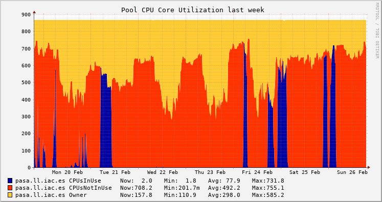

HTCondor@IAC User's Manual
Table of Contents
- 1. Introduction
- 1.1. What is HTCondor?
- 1.2. How can HTCondor help me?
- 1.3. How powerful is HTCondor?
- 1.4. Which machines are part of HTCondor?
- 1.5. How can I use HTCondor?
- 1.6. Where will my application run?
- 1.7. Basic HTCondor workflow
- 1.8. Acknowledging HTCondor in publications
- 1.9. Further information and support
- 2. Submit files
- 2.1. Introduction
- 2.2. Submit files syntax
- 2.3. Templates and examples
- 2.3.1. Common Template
- 2.3.2. Examples when working with input/output files and arguments
- 2.3.2.1. Example A (arbitrary filenames)
- 2.3.2.2. Example B (based on ProcessID, old system before HTCondor v8.4.0)
- 2.3.2.3. Example C (lists of files and arguments written in submit file)
- 2.3.2.4. Example D (lists of files and arguments in external file)
- 2.3.2.5. Example E (
stdin,initialdirexternal scripts and lists) - 2.3.2.6. Example F (loops)
- 2.3.2.7. Example G
- 3. Main HTCondor commands
- 4. Submit files (HowTo)
- 4.1. How to … add requirements on the target machines where my jobs will be run?
- 4.2. How to … add preferences on the target machines where my jobs will be run?
- 4.3. How to … get/set environment variables?
- 4.4. How to … control HTCondor notifications?
- 4.5. How to … run some shell commands/scripts/programs before/after our application?
- 4.6. How to … specify the priority of your jobs?
- 4.7. How to … deal with jobs that fail?
- 4.8. How to … limit the number of concurrent running jobs?
- 4.9. How to … do some complex operations in my submit file?
- 4.10. How to … work with nested loops?
- 4.11. How to … program my jobs to begin at a predefined time?
- 4.12. How to … run jobs that have dependencies among them?
- 4.13. How to … know the attributes of the machines where our jobs are run?
- 5. FAQs
- 5.1. General Information
- 5.1.1. What is Condor? How can Condor help me? Who can use it? Who could help me if I have any problems?
- 5.1.2. How does Condor work? My machine is in ''Owner/Unclaimed/Claimed'' state, what does it mean?
- 5.1.3. Sometimes Condor runs jobs on my computer when I am working on it, can I avoid that?
- 5.1.4. I am using Condor, should I add an acknowledgement text in my publications?
- 5.2. Preparing and submitting your jobs
- 5.2.1. I have developed a program, do I need to make any modification to run it with Condor?
- 5.2.2. How do I run my application with Condor? (submitting jobs to queue)
- 5.2.3. How do I check the Condor queue and my submitted jobs?
- 5.2.4. Where should I put my input files so that Condor will be able to find them?
- 5.2.5. If Condor runs my program on different machines, how I can get my output files?
- 5.2.6. Can I tell Condor to use a different directory for input/output files?
- 5.2.7. I would like to use a loop to send my jobs with different arguments… can I do that?
- 5.2.8. Do I need to rename my input/output files to work with Condor?
- 5.2.9. Should I delete temporary files?
- 5.2.10. What are the technical specifications of machines running Condor? Can I restrict and/or prioritize those specifications in my jobs?
- 5.2.11. How can I get/set environment variables when running with Condor (python and other programs may need them)?
- 5.2.12. Can I change my jobs attributes after submitting them?
- 5.3. Having some troubles with your jobs
- 5.3.1. I cannot submit jobs, what is wrong?
- 5.3.2. How can I check that my program is running fine? Can I access to the input/output files in the remote machine?
- 5.3.3. My submitted jobs are always in Idle status, why do they never run (and what about users' priority)?
- 5.3.4. Condor have problems with input and/or output files… are my paths wrong?
- 5.3.5. My jobs are 'on hold' status and never finish, what does it mean?
- 5.3.6. Condor is copying unwanted files to my machine, how can I avoid that?
- 5.3.7. Some of my jobs are failing due to wrong inputs, can I fix that problem and then run again only those jobs that failed?
- 5.3.8. Some of my jobs randomly fail (or I know they will fail in some specific machines)… how can I prevent that?
- 5.3.9. I want to repeat (resubmit) ONLY some of my jobs, is that possible?
- 5.3.10. I see that my jobs complete after being running for N+X minutes/hours, when they only need N to finish. Is that normal?
- 5.3.11. I have submitted jobs that need some hours to finish. They have been running for days and just few have finished… what is happening?
- 5.3.12. Some of my python programs work fine, but other fail…
- 5.3.13. I receive an error when running HTCondor jobs that use python and matplotlib…
- 5.3.14. I would like to get more information about the execution, is there an easy way to see the logs created by Condor?
- 5.4. Special needs
- 5.4.1. I am running many jobs, but some are more important than others, how can I prioritize them?
- 5.4.2. I am receiving hundreds of emails from Condor, can I stop that?
- 5.4.3. What happens with my IDL or Matlab jobs that require licences to run?
- 5.4.4. I need to run some commands or scripts before/after my executable, is that possible?
- 5.4.5. Is it possible to limit the maximum number of concurrent running jobs?
- 5.4.6. I need to do some complex operations in my submit file, is that possible?
- 5.4.7. I would like to submit my jobs now, but they should run at a programmed time, can I do that?
- 5.4.8. Jobs leave the queue after finishing. If something went wrong… could they be held or automatically re-executed instead?
- 5.4.9. I have a fault tolerant application, can I save the state and restore it when executing with Condor?
- 5.4.10. My jobs have some dependencies, is it possible to specify that?
- 5.5. More info
- 5.1. General Information
- 6. HTCondor and IDL
1 Introduction
If you have no experience with HTCondor, we recommend that you contact us before running any job so we can give you a quick introduction (bear in mind that you will be using other users' computers and there are some basic guidelines that you must follow to avoid disturbing them).
The HTCondor infrastructure at the IAC has been recently expanded and improved, with about 100 new Linux desktop PCs financed by the Ministry of Economy and Competitiveness through FEDER funds, code IACA13-3E-2493.
1.1 What is HTCondor?
At the IAC we have several Supercomputing resources that allow you to obtain your computational results in much less time and/or work with much more complex problems. One of them is HTCondor, a High Throughput Computing (HTC) system. The underlying idea is quite simple (and powerful): let's use idle machines to perform computations while their owners are away. So, in a nutshell, HTCondor is an application that is installed in our PCs to make it possible to run a large number of yours and others' computations at a time in different machines when they are not being used, achieving a better utilization of our resources. A more detailed overview of HTCondor is available at the official documentation.
1.2 How can HTCondor help me?
HTCondor is very useful when you have an application that has to run a large number of times over different input data. For instance, suppose you have a program that carry out some calculations taking an image file as input. Let's say that the processing time is about one hour per image and you want to process 250 images. Then you can use your own machine and process all images one by one, and wait more than 10 days to get all results, or you can use HTCondor to process each image in different computers and hopefully get all results in one hour, or maybe two or four, but for sure less than 10 days. And HTCondor will do all the work for you: it will copy the input files to the remote machines, execute your program there with different inputs and bring back the results to your machine when they are complete.
1.3 How powerful is HTCondor?
HTCondor calls a slot the unit that executes a job, typically a CPU or a core if the CPU has several of them. Right now we have over 1000 slots that might execute applications submitted via HTCondor. It means that everyday more than 24000 hours could be available to run HTCondor jobs, close to 3 years of computation in a single day! Obviously, this is the theoretical maximum if no one were using their computers and all slots were idle, but the number of actual available slots could be around 400 during office hours and around 700 at nights and weekends.
You can see real-time HTCondor@IAC statistics (global and per user) here. Figure 1 is an example showing the global usage where Owner represents slots that are being used outside of HTCondor. The remaining slots are available to HTCondor, but if there are no eligible jobs to run, those slots will be in CPUsNotInUse state. Those slots that are actually being used by HTCondor are those in the CPUsInUse state.

Figure 1: Weekly global usage
1.4 Which machines are part of HTCondor?
HTCondor is installed in a number of burros (High Performance Linux PCs) and desktop PCs at the IAC Headquarters in La Laguna.
Regarding their hardware specifications, they are rather heterogeneous and their availability and specifications change from time to time. You can check which machines make up the HTCondor@IAC pool at any given time in the HTCondor Ganglia webpage.
Regarding their software specifications, at present all machines are running Ubuntu 18.04 and the installed software should be also more or less the same in every machine (see the software supported by the SIE), which makes it easy to run almost every application in any machine.
Detailed information about each machine can be obtained with the command
condor_status (see Section 3.1).
HTCondor provides a simple mechanism by which you can specify a set of requirements for the machines where you want your application to run, for example: memory per slot, OS version, etc. (see Section 2).
1.5 How can I use HTCondor?
If you have an account in the IAC network, then you can use HTCondor.
HTCondor is a batch-processing system (i.e. non-interactive), so you submit jobs
to the HTCondor queue with the condor_submit command, and providing a text
submission file, where you specify the executable file, its arguments, inputs
and outputs, etc. (see Section 3.2).
You do not need to prepare or compile your programs in any special way to run them, and almost all programming languages should be suitable (shell scripts, Python, Perl, C, Fortran, IDL, etc.). Sometimes a few minor modifications may be needed in order to specify arguments and the locations of inputs or outputs.
1.6 Where will my application run?
When you submit jobs to the HTCondor queue, HTCondor uses its allocation algorithm to send and execute your jobs on those idle slots that satisfy your requirements. Idle slots are those located in machines where there has been no keyboard/mouse activity for a long time and the computer load is low enough to ensure that there is no interference with the owner's processes.
While HTCondor is running its jobs, it also keeps checking that the owner is not using the machine. If HTCondor detects any activity in the computer (for instance, keyboard activity), then it will suspend all its jobs and wait a little while to see whether the machine gets idle again so as to resume the jobs. If the machine does not become idle in a short time, HTCondor will vacate it, interrupting all HTCondor jobs and sending them to other available slots in any other idle machine.
HTCondor will repeat this process untill all jobs are done, optionally sending notifications via email when they are finished or if any errors show up.
1.7 Basic HTCondor workflow
The basic workflow with HTCondor will include four steps: checking the HTCondor pool status, submitting a job, checking and managing the submitted job, and getting information from the logs. Commands and examples for these phases are given with further details in the following sections, but here we present a very basic example to Quick Start you.
Checking the HTCondor pool status
You can use the command
condor_status, to quickly check the status of the HTCondor pool:[angelv@denso ~]$ condor_status -compact Machine Platform Slots Cpus Gpus TotalGb FreCpu FreeGb CpuLoad ST cruise.dyn.iac.es x64/Ubuntu18 _ 4 7.64 1 1.91 0.00 Oi dama.ll.iac.es x64/Ubuntu18 _ 40 754.54 1 18.86 0.00 Ui [...] villa.dyn.iac.es x64/Ubuntu18 _ 16 187.58 1 11.72 0.00 Oi virus.dyn.iac.es x64/Ubuntu18 _ 8 62.73 1 7.84 0.02 Oi Total Owner Claimed Unclaimed Matched Preempting Backfill Drain x64/Ubuntu18 868 318 2 548 0 0 0 0 Total 868 318 2 548 0 0 0 0Submitting a job
In order to ask HTCondor to run you application you will need:
your application
For example, given the following basic C code (
simple.c):#include <stdio.h> main(int argc, char **argv) { int sleep_time; int input; int failure; if (argc != 3) { printf("Usage: simple <sleep-time> <integer>\n"); failure = 1; } else { sleep_time = atoi(argv[1]); input = atoi(argv[2]); printf("Thinking really hard for %d seconds...\n", sleep_time); sleep(sleep_time); printf("We calculated: %d\n", input * 2); failure = 0; } return failure; }
You would compile it as usual:
gcc -o simple simple.c
a submit file
The submit file is a plain text file that specifies the name of your executable (
simple), how many jobs to submit (Queue 100), etc.Universe = vanilla Executable = simple Arguments = 400 10 Log = simple.log Output = simple.$(Process).out Error = simple.$(Process).error nice_user = True Queue 100
the
condor_submitcommandUsing the submit file as an argument to the command
condor_submityou instruct HTCondor to start executing your job in the HTCondor Pool.[angelv@denso ~]$ condor_submit test.condor Submitting job(s)........................................................... 100 job(s) submitted to cluster 4.
Checking the progress of the submitted jobs
The basic command to check on the progress of your jobs is
condor_q. In the following example we can see that all the 100 jobs submitted above are successfully running:[angelv@denso ~]$ condor_q -- Schedd: denso.ll.iac.es : <161.72.216.13:9618?... @ 02/27/23 09:27:40 OWNER BATCH_NAME SUBMITTED DONE RUN IDLE TOTAL JOB_IDS angelv ID: 4 2/27 09:24 _ 100 _ 100 4.0-99 Total for query: 100 jobs; 0 completed, 0 removed, 0 idle, 100 running, 0 held, 0 suspended Total for angelv: 100 jobs; 0 completed, 0 removed, 0 idle, 100 running, 0 held, 0 suspended Total for all users: 100 jobs; 0 completed, 0 removed, 0 idle, 100 running, 0 held, 0 suspended
Getting information from the logs
If everything goes well, when the jobs finish, any output files created by your application will be, by default, copied back to the directory whence you submitted your job.
At the same time, you can instruct HTCondor to save to files any output that your application produces. In the example above, the standard output generated by each job is written to a file called
simple.$(Process).out, where$(Process)will be automatically substituted by HTCondor by the number of each job (in this case, given that we submitted 100 jobs, the numbers will go from 0 to 99). For example, the filesimple.0.outcould read:[angelv@denso ~]$ cat simple.0.out Thinking really hard for 400 seconds... We calculated: 20
Also, a global log of the steps taken by HTCondor to execute your jobs can generated (in the example above called
simple.log). This log will give you details of when each job was submitted, when it started executing, whether it was evicted or had any other problems, etc. In this example, the filesimple.logcould read:[angelv@denso ~]$ cat simple.log 000 (004.000.000) 2023-02-27 09:24:41 Job submitted from host: <161.72.216.13:9618?addrs=161.72.216.13-9618+[2001-720-1610-50d8--d]-9618&alias=denso.ll.iac.es&noUDP&sock=schedd_3008_d0f7> ... 000 (004.001.000) 2023-02-27 09:24:41 Job submitted from host: <161.72.216.13:9618?addrs=161.72.216.13-9618+[2001-720-1610-50d8--d]-9618&alias=denso.ll.iac.es&noUDP&sock=schedd_3008_d0f7> ... 000 (004.002.000) 2023-02-27 09:24:41 Job submitted from host: <161.72.216.13:9618?addrs=161.72.216.13-9618+[2001-720-1610-50d8--d]-9618&alias=denso.ll.iac.es&noUDP&sock=schedd_3008_d0f7> [...] 040 (004.002.000) 2023-02-27 09:24:47 Started transferring input files Transferring to host: <161.72.216.8:9618?addrs=161.72.216.8-9618+[2001-720-1610-50d8-21e-4fff-feba-8ff9]-9618&alias=delta.ll.iac.es&noUDP&sock=slot4_3147_1899_416> ... 040 (004.003.000) 2023-02-27 09:24:47 Started transferring input files Transferring to host: <161.72.216.8:9618?addrs=161.72.216.8-9618+[2001-720-1610-50d8-21e-4fff-feba-8ff9]-9618&alias=delta.ll.iac.es&noUDP&sock=slot5_3147_1899_414> [...] 001 (004.002.000) 2023-02-27 09:24:48 Job executing on host: <161.72.216.8:9618?addrs=161.72.216.8-9618+[2001-720-1610-50d8-21e-4fff-feba-8ff9]-9618&alias=delta.ll.iac.es&noUDP&sock=startd_2745_6b8f> ... 001 (004.003.000) 2023-02-27 09:24:48 Job executing on host: <161.72.216.8:9618?addrs=161.72.216.8-9618+[2001-720-1610-50d8-21e-4fff-feba-8ff9]-9618&alias=delta.ll.iac.es&noUDP&sock=startd_2745_6b8f> [...] 005 (004.040.000) 2023-02-27 09:31:45 Job terminated. (1) Normal termination (return value 0) Usr 0 00:00:00, Sys 0 00:00:00 - Run Remote Usage Usr 0 00:00:00, Sys 0 00:00:00 - Run Local Usage Usr 0 00:00:00, Sys 0 00:00:00 - Total Remote Usage Usr 0 00:00:00, Sys 0 00:00:00 - Total Local Usage 58 - Run Bytes Sent By Job 8432 - Run Bytes Received By Job 58 - Total Bytes Sent By Job 8432 - Total Bytes Received By Job Partitionable Resources : Usage Request Allocated Cpus : 0 1 1 Disk (KB) : 24 10 207282725 Memory (MB) : 0 1 4024 Job terminated of its own accord at 2023-02-27T09:31:44Z with exit-code 0.
1.8 Acknowledging HTCondor in publications
It is important that you acknowledge HTCondor in any publication of your work where you have used HTCondor (and we would be grateful if you could send us the details of the published paper). This will help us to improve the visibility of the HTCondor@IAC facility and ensure that it is available at the IAC for the foreseable future. Although there is no standard acknowledgment format, we suggest the following:
This paper made use of the IAC Supercomputing facility HTCondor (http://research.cs.wisc.edu/htcondor/), partly financed by the Ministry of Economy and Competitiveness with FEDER funds, code IACA13-3E-2493.
1.9 Further information and support
This manual is only a brief introduction to all HTCondor has to offer. For detailed and complete information, check the official HTCondor v10.0 Manual.
If you need help or you are having any kind of issues related to HTCondor, the SIE gives direct support to IAC's users who want to use HTCondor: we will not code your whole application, but we will help and advise you on how to get the most out of HTCondor.
If you want to stay informed about HTCondor@IAC updates, tips, etc. there is a low traffic mailing list (send us an e-mail if you want to subscribe to it).
2 Submit files
2.1 Introduction
HTCondor Submit Description Files, or simply Submit files, are arguably the cornerstone of your interaction with HTCondor, since you use them to specify how to execute your application with HTCondor, by providing a number of parameters like the name of your executable, its arguments, inputs and outputs, requirements, etc.
In section 1.7 we saw a very simple submit file. Depending on your needs, that might be enough, but HTCondor offers many options and a rich syntax for writing submit files, which will be useful in more advanced cases. In this section we will cover the features needed in some of the most typical scenarios.
Before submitting your jobs, perform always some simple tests in order to make
sure that both your submit file and program will work in a proper way. Also,
condor_submit -dry-run can help you to debug your jobs and make sure they will
work as expected.
2.2 Submit files syntax
HTCondor submit files can include comments, variables, macros, commands,
etc. Here we will describe the most important syntax components. For a more
detailed description you can check the official documentation (Submitting a Job,
condor_submit).
2.2.1 Comments
Blank lines and lines beginning with a pound sign (#) character are ignored by
the submit description file parser.
2.2.2 Variables and macros
You can define your own variables, and there are also many predefined variables and macros that you can use in submit files.
- To define a variable, just choose a valid name (names are case-insensitive)
and assign a value to it, like
N = 4,Name = "example" - To get the value of a variable, use next syntax:
$(varName)(both the$symbol and the parentheses()are mandatory). - There are several special automatic variables defined. The most useful one
is
*$(Process)*or$(ProcId), that will contain the Process ID of each job (if you submitNjobs, the value of$(Process)will be0for the first job andN-1in the last job). This variable is like an iteration counter and you can use it to specify different inputs, outputs, arguments, etc. for each job. There are some other automatic variables, like$(Cluster)or$(ClusterId)that stores the ID of each submission,$(Item),$(ItemIndex),$(Step),$(Row), etc. - There are several pre-defined Function Macros. Their syntax is
$FunctName(varName)and they can perform some operations on variablevarNamelike evaluating expressions and type conversions, selecting a value from a list according an index, getting random numbers, string operations, filenames processing, setting environment variables, etc. - You can do basic operations with variables, like
B = $(A) + 1, etc. To get the expression evaluated, you may need to use function macros like$INT(B),$REAL(B), etc.
2.2.3 Submit commands
The commands which can appear in the submit description file are numerous (see submit description file commands), but in most situations you will only need a few of them. Here we present the most common ones (commands are case-insensitive):
- Mandatory commands
executablelocation of the executable file (you can use an absolute path, one relative to the directory where you do the submission or to another directory specified withinitialdir). You should specify only the executable and not other things like arguments, etc., since there are specific commands for that.queuethis command will send your job(s) to the queue, so it should be the last command in your submit file. With it you can specify the number of jobs to submit, but you can also use it to specify variables, iterations over other commands, files to be processed, list of arguments, etc.
- Highly recommended commands
outputit will copy the standard output printed on the screen (stdout) of the remote machines when executing your program to the local file you specify here. In order to generate a different output file for each job, the filename should include variables, like$(Process)(and perhaps also$(Cluster).errorthe same as previous command, but for standard error output (stderr).logfile to keep track of the progress of your submission (very useful to debug problems with your job(s). It is advisable to keep just one log file for all jobs belonging to the same submission, so a filename with a name likelog.$(Cluster)is recommended.universeyour job(s) execution environment. By default, the simplest one (vanilla) will be chosen, but for more advanced users, otheruniversemight be necessarey. See Choosing an HTCondor Universe.
- Useful commands for application Input/Output
argumentsused to specify options and flags for your executable file (as if it executed in the command line).should_transfer_filesassignYESin order to activate HTCondor's file transfer system (needed when working with files).transfer_input_filesa comma-separated list of files (with absolute or relative paths) used to specify where the needed input files are located. HTCondor will copy all the files (together with the executable) to the root directory of a virtual location on the remote machine. A directory name with a trailing/character will copy only the contents of the directory. Without the trailing/the directory itself and its contents will be copied.transfer_output_filesa comma-separated list of result files to be copied back to our machine. If this command is omitted, HTCondor will automatically copy all files that have been created or modified on the remote machine. Sometimes omitting this command is useful, but other times our program creates many temporary or useless files and we only want to get the ones we specify with this command.CONTINUE HERE
- More commands for input/output files:
transfer_output_remaps: it changes the name of the output files when copying them to your machine. That is useful when your executable generates result file(s) with the same name, so changing the filename to include a variable part (like$(Process)and maybe also$(Cluster)) will avoid overwritten them.initialdir: this command is used to specify the base directory for input and output files, instead of the directory where the submission was performed from. If this command include a variable part (like$(Process)), you can use this command to specify a different base directory for each job.input: if your program needs some data from keyboard, you can specify a file or a comma-separated list of files containing it (each end of line in the file will have the same behaviour as pressingIntrokey in the keyboard, like when usingstdinredirection in command line with *=<*=). As other similar commands, you can use absolute or relative paths.transfer_executable: by default its value isTrue, but if it is set toFalse, HTCondor will not copy the executable file to the remote machine(s). This is useful when the executable is a system command or a program that is installed in all machines, so it is not needed to copy it.
when_to_transfer_outputit will usually have a value ofON_EXITto only copy output files when your job is finished, avoiding the copy of temporary or incomplete files if your job fails or it is moved to another machine.
- Other useful commands
request_memory,request_disk: if your program needs a certain amount of total RAM memory or free disk space, you can use these commands to force that your jobs will be only executed on machines with at least the requested memory/free disk space HowTorequirements: this is a very useful command if your program has any special needs. With it you can specify that your job can be only executed on some machines (or some machines cannot run your program) according to a wide set of parameters (machine name, operative system and version and a large etc.) HowTorank: you can specify some values or combination of them (total memory, free disk space, MIPS, etc.) and HTCondor will choose the best machines for your jobs according to your specifications, where the higher the value, the better (this command is used to specify preferences, not requirements) HowTogetenv: if it is set toTrue, all your environment variables will be copied at submission time and they will be available when your program is executed on remote machines (if you do not use this command or it is set toFalse, then your jobs will have no environment variables). This is useful when running some programs that need a special environment, like python, etc. HowTonice_user: if it is set toTrue, your jobs will be executed with a fake user with very low priority, what could be very useful when the queue is (almost) empty, so you can run your jobs without wasting your real user priority (you can activate and deactivate this feature when your jobs are being executed, so you can begin running your jobs as nice user if the queue is empty and change to normal user when the queue has many other jobs, or vice versa) HowToconcurrency_limits: you can limit the maximum number of your jobs that could be executed at the same time. You should use this command if your program needs licences and there are a few of them (likeIDL, see also CondorAndidlvirtualmachine) or if for any reason you cannot use the HTCondor file transfer system and all your jobs access to the same shared resource (/scratch,/net/nas, etc.), in order to avoid that too many concurrent access can stress the network CondorHowTo#howtolimitinclude: since HTCondor v8.4.0, it is possible to include externally defined submit commands using syntax: =include : ''<myfile>''=. You can even include the output of external scripts that will be executed at submission time, adding a pipe symbol after the file: =include : ''<myscript.sh>'' *|*=- More useful commands:
environment: this command will allow you to set/unset/change any environment variable(s) CondorHowTo#howtoenvpriority: if some of your jobs/clusters are more important than others and you want to execute them first, you can useprioritycommand to assign them a priority (the higher the value, the higher priority). This command only have an effect on your own jobs, and it is not related to users priority CondorHowTo#howtopriority.job_machine_attrs,job_machine_attrs_history_length: use these commands to reduce the effects of ''black holes'' in HTCondor, what causes that many of your jobs could fail in a short time CondorHowTo#howtofailingnoop_job: you specify a condition and those jobs that evaluate it to true will not be executed. This is useful when some of your jobs failed and you want to repeat only the failing jobs, not all of them CondorHowTo#howtofailing+PreCmd,+PreArguments,+PostCmd,+PostArguments: These commands allow you to run some scripts before and/or after your executable. That is useful to prepare, convert, decompress, etc. your inputs and outputs if needed, or debug your executions CondorHowTo#howtoprepostcmdnotify_user,notification: use these commands if you want to receive a notification (an email) when your jobs begin, fail and/or finish CondorHowTo#howto_notifyif…elif…else…endif: since HTCondor version 8.4.0, a limited conditional semantic is available. You can use it to specify different commands or options depending on the defined/undefined variables, HTCondor version, etc.on_exit_hold,on_exit_remove,periodic_hold,periodic_remove,periodic_release, etc.: you can modify the default behaviour of your jobs and the associated status. These commands can be used in a wide set of circumstances. For instance, you can force that jobs that are running for more than X minutes or hours will be deleted or get a ''on hold'' status (with this you can prevent that failing jobs will be running forever, since they will be stopped or deleted if they run for a much longer while than expected) or the opposite, hold those jobs that finish in an abnormal short time to check later what happened. Or you can also periodically release your held jobs, to run them on other machines if for any reason your jobs work fine on some machines, but fail on others CondorHowTo#howtofailingdeferrall_time,deferral_window,deferral_prep_time: you can force your jobs begin at a given date and time. That is useful when the input data is not ready when submitting and your jobs have to wait till a certain time CondorHowTo#howtorunintime
2.3 Templates and examples
Here you can find basic templates of submit files, you can use them as starting point and then do the customizations needed for your executions. Check the examples in following sections for details and explanations.
2.3.1 Common Template
###################################################### # HTCondor Submit Description File. COMMON TEMPLATE # Next commands should be added to all your submit files ###################################################### if !defined FNAME FNAME = condor_exec endif ID = $(Cluster).$(Process) output = $(FNAME).$(ID).out error = $(FNAME).$(ID).err log = $(FNAME).$(Cluster).log universe = vanilla should_transfer_files = YES when_to_transfer_output = ON_EXIT
Explanation:
Let's analyse the common template:
- First block:
- Here we will define some variables that will be used later. The first of
them is
FNAMEand first we ask with theif definedcondition whether that variable is not already defined (if so, we will use the previous value). This variable will contain the base name for the files where HTCondor will save the information displayed on the screen (stdoutandstderr) and the log file. It is interesting to give a common name to those files generated by HTCondor so later we can identify and manage them together. Since all jobs will use the name specified there, we have to include a variable part that has to be different in each job, in order to avoid overwriting the files. We recommend you use a combination of$(Process)(it contains the process ID that is different for each job) and$(Cluster)(it contains the cluster ID that is different for each submission), as we have done when defining$(ID). In this way, different jobs and different submission will use different filenames and none of them will be overwritten.
- Here we will define some variables that will be used later. The first of
them is
- Second block:
- With
outputcommand we force HTCondor to write in the specified file all the screen output (stdout) generated by each job. We have used the variables$(FNAME)and$(ID)defined above. - With
errorcommand we managestderrin the same way we did withoutput. - Then we have also specified a HTCondor log file with
logcommand. You should not use$(Process)in the filename of the log since all jobs should share the same log.
- With
- Third block:
universe: there are runtime environments in HTCondor called ''universes'', we will mostly use the one namedvanillasince it is the easiest one. This is the universe by default, so if you miss this command, your jobs will go also tovanillauniverse.should_transfer_files=YESandwhen_to_transfer_output=ON_EXITcommands are used to specify that input files have to be copied to the remote machines and output files must be copied back to your machine only when our program is finished. Although these commands are only needed when working with files, we recommend you always use them unless you are totally sure you can omit them.
- First block:
2.3.2 Examples when working with input/output files and arguments
Most times you will want to run applications that deal with input and/or output files. Commonly, the input files will be located on your local machine, but since your application will be executed on other machine(s), it will be needed to copy your input files there, and then copy the result files back to your computer once your program is done. HTCondor have some commands to automatically do both operations in an easy way, so you do not need to worry about the file transfers: you just need to specify where your files are and HTCondor will copy them.
Note: All these examples will begin defining a specific variable FNAME that
contains the base name of the files that HTCondor will generate to save the
stdout, stderr and log. Next, the common template explained above with be
included using command include (we assume that the common template filename is
condor_common.tmpl).
2.3.2.1 Example A (arbitrary filenames)
Process all input files with extension .in in a given directory with next
program: ./myprogram -i inputFile -o outputFile
# Including Common Template FNAME = exampleA include : /path/to/condor_common.tmpl transfer_input_files = $(mydata) transfer_output_files = $Fn(mydata).out executable = myprogram arguments = "-i $Fnx(mydata) -o $Fn(mydata).out" queue *mydata* matching files /path/to/inputs/*.in
Explanation: We use
transfer_input_filesto specify where the needed input files are located. We can use a comma-separated list of files, but since we do not know the name of the files, we will use the variablemydatato specify them. That variable is defined in the last line, with thequeuecommand: there, we choose to process all files in/path/to/inputswith extension.in. When submitting, HTCondor will check that directory and it will automatically create a job for each.infile found there, assigning the complete filename tomydata(in this way, each job will work with a different file). We have used thematching filesto specify that we only want files matching the condition, but we can also select only directories (matching dirs) or both of them (justmatching).With
transfer_output_fileswe set the name of the output files, that is the same as the input file with.outextension. To remove the old extension we use the$Fnmacro, that is one of the new Function Macros available since version 8.4.0, used to operate the filename and extract the path, name without extension, extension, etc.Then we use
executableto specify the name of the executable (it can be a system command, your own application, a script, etc). We can use a absolute path or a relative one to the directory where we will perform the submission. This executable will be copied to all remote machines automatically. Finally,argumentsis used to specify the options for the program. We have to employ againFpdnxqmacros, firstFnxto remove the original path (file we be copied to the root of a virtual location where HTCondor will run the executable on the remote machine) and thenFnto remove path and change extension of the output file.
2.3.2.2 Example B (based on ProcessID, old system before HTCondor v8.4.0)
Process 50 input files with consecutive names (from data0.in to data49.out) using the same program as previous example
# Including Common Template FNAME = example2 include : /path/to/condor_common.tmpl transfer_input_files = /path/to/inputs/data$(Process).in transfer_output_files = data$(Process).out N = 50 executable = myprogram arguments = "-i data$(Process).in -o data$(Process).out" queue $(N)
Explanation:
transfer_input_filescommand allows a comma-separated list of files or directories that will be copied to the remote machine. Local path will be ignored, and HTCondor will copy all files to the root directory of a virtual location on the remote machine (your executable will be also copy to the same place, so input files will be in the same directory). If you specify a directory in this command, you can choose if you want to copy only the content of the directory (add a slash "*=/*=" at the end, for instancemyInputDir*/*) or the directory itself and its content (do not add a slash). In this case, each job will process a different input file, and since they have a consecutive name beginning from0, we will use HTCondor macro$(Process)to build the proper name, since the process ID will be0from the first job toN-1for the last job.With
transfer_output_fileswe specify a comma-separated list of result files to be copied back to our machine. In this case, we specify just one file, with the same name as the input file, but with.outextension.Then we define the variable
Nto specify the number of jobs to be executed. Our program is set usingexecutablecommand and withargumentscommand we specify all the needed options (here the name of the input and output file with the corresponding flags).At the end, we send all jobs to the queue with
queuecommand, specifying how many jobs we want (we have used the variableN).
2.3.2.3 Example C (lists of files and arguments written in submit file)
Process all arbitrary files and arguments of a given list. Executable is
myprogram and it needs an input file with extension .dat and some
arguments. Results will be printed on screen (stdout).
# Including Common Template FNAME = exampleC include : /path/to/condor_common.tmpl executable = myprogram queue transfer_input_files,arguments *from* ( xray434.dat, -d 345 -p f034 sunf37.dat, -d 2 -p f302 light67.dat, -d 62 -p f473 )
- Explanation:
We will use the flexibility of queue command to assign values of a list to
several commands. We must specify which files must be transferred and which
arguments are needed by each file. We specify then transfer_input_files and
arguments commands using the from option, and then we add a list of pairs
''file,argument''.
At submission time, HTCondor will iterate over the list and expand the assignations. For instance, our jobs will have next values:
transfer_input_files = xray434.dat, arguments = -d 345 -p f034-transfer_input_files = sunf37.dat, arguments = -d 2 -p f302-transfer_input_files = light67.dat, arguments = -d 62 -p f473-
When using this format you can specify as many commands separated by commas as
needed between queue and from, but check that each line in the list has the
right number of elements also separated by commas.
Writing the list of items in the submit file can be a little bit tedious, but it
may be easily done in an external file using scripts. Then you can directly
specify the file. For instance, suppose you have all items in a file named
data.lst, then you can use next queue command:
queue transfer_input_files,arguments from /path/to/data.lst
2.3.2.4 Example D (lists of files and arguments in external file)
Process arbitrary files and arguments stored in file data.lst (process only
lines from 28 to 43, both inclusive, with step 5). Executable is myprogram as
in previous example, but this time it saves the result in a file named
output.out.
# Including Common Template FNAME = exampleD include : /path/to/condor_common.tmpl transfer_output_files = output.out line = $(Row)+1 transfer_output_remaps = "output.out=output$INT(line).out" executable = myprogram queue transfer_input_files,arguments *from* [27:43:5] data.lst
- Explanation:
This example is similar to the previous one, but this time the list of input files and arguments is written in a file with the following format:
[input_file1,args1] [input_file2,args2] [input_file3,args3] ...
To illustrate the slice feature, we have been asked to process only items
(lines) from 28 to 43 with step 5 (28, 33, 38 and 43), this could be useful when
we want to run only certain experiments. The syntax for the slices is very easy,
the same as Python: [init:end:step]. Since the first index is 0, but we do not
use line 0 but line 1, the init should be 27. Then the end is 43 (it should
be 42, but we need to add 1 because the upper limit is included according to our
example). So we specify the slice using [27:43:5] in the queue command,
between the from clause and the file.
We have to be careful with the results. Our program writes them in a file named
output.out. We cannot get all files with the same name because they will be
overwritten, so we need to use transfer_output_remaps to change names when
copying from remote machines to our. We can add the $(Process) variable to the
new name, so all of them will be different, but then it could be a little bit
complicated to identify each result. Instead, we will use another of the
automatic variables, called $(Row). It stores the number of the row in the
list that is being processed, that is, almost the number of the line: since
$(Row) begins in 0, we need to add 1 to get the line number. We do that in
variable $(line). Then, HTCondor will process rows 27, 32, 37 and 42, and our
output files will be output28.out, output33.out, output38.out and
output43.out.
2.3.2.5 Example E (stdin, initialdir external scripts and lists)
Our program myprogram works with stdin (keyboard is used to specify input
data). We have written that input data in 4 files (dataFeH.in, dataOFe.in,
dataOH.in and dataHe.in) and there is a set of 3 different experiments in
directories (dir000, dir001 and dir002). Output files will be generated
with the same name as inputs and extension .out (use -o argument) and they
must be located in the same directory where the respective input file
is. Program also needs all *=.tbl= files located in /path/to/tables.
# Including Common Template FNAME = exampleE include : /path/to/condor_common.tmpl N = 3 input = data$(met).in initialdir = /path/to/dir$INT(Step,%03d) include : input_tables.sh | transfer_output_files = data$(met).out executable = myprogram arguments = "-o data$(met).out" queue $(N) *met* *in* FeH, OFe, OH, He
- Explanation:
The key of this example is the queue command in last line. We are using the
clause *=in*= to specify a list of values. HTCondor will create a job for each
element in the list and the current value will be assigned to the variable met
that we have declared (this variable is optional, you can omit it and use the
automatic variable Item). We have 3 set of experiments, so we need to go over
the list 3 times, that is why we have defined N = 3 and we are using $(N) in
the queue command. So, at the end, HTCondor will execute 12 jobs (3 runs * 4
elements in the list): we will use automatic variable $(Step) to get the
number of the present run (0, 1 or 2) and $(met) (or $(Item) if we omit the
variable) to get the value of the current element in the list.
input command is used to specify a file that will be used as stdin, using
variable $(met) to get the proper filename. That variable will be also used
when building the name of the output files (transfer_output_files command) and
the arguments (arguments command).
We use initialdir to specify a base directory that changes according to the
current job, using the automatic variable $(Step). HTCondor will use this
directory as base for the relative paths, so it will affect the input and output
files, including the stdout, stderr and log files created by HTCondor (see
common template). We use $INT(Step,%03d) to get a 3-digit number (000, 001
and 002) to build the proper path for each experiment, then HTCondor will go to
the right directory to get the input files and to place later the respective
output files there.
Last thing we have to solve is the problem with the required input files (all
*=.tbl= files located in /path/to/tables). HTCondor does not allow globbing in
transfer_input_files, but instead we can use the new feature of including
external files with include command. This command not only include other
files, but also invoke them if the command finish with a bar *|*. Then we
can easily make a external script to get the list of needed files with linux
command ls and options -m (commas are used to separate elements) and -w
(used to specify the wide of the screen before adding a new line. Since we need
all elements in the same line, we should specify a number big enough). In this
case, our external script input_tables.sh is the following one:
#!/bin/bash echo "transfer_input_files = `ls -w 400 -m /path/to/tables/*.tbl`"
2.3.2.6 Example F (loops)
Execute each iteration of a 3-level nested loop using: myprogram -dim1 i -dim2
j -dim3 k = with the following ranges: =i:[0,20), j:[0,15) and
k:[0,35). Output will be written on screen, no input files are needed.
# Including Common Template FNAME = exampleF include : /path/to/condor_common.tmpl MAX_I = 20 MAX_J = 15 MAX_K = 35 N = $(MAX_I) * $(MAX_J) * $(MAX_K) I = ( $(Process) / ($(MAX_K) * $(MAX_J))) J = (($(Process) / $(MAX_K)) % $(MAX_J)) K = ( $(Process) % $(MAX_K)) executable = myprogram arguments = "-dim1 $INT(I) -dim2 $INT(J) -dim3 $INT(K)" queue $(N)
- Explanation:
In this example we only need to ''simulate'' a 3 nested loops from a 1-level
loop (we will use $(Process) as main loop counter). The 3-level loop will be
the next ones, and HTCondor will create a job for each iteration:
for (i = 0; i < MAX_I; i++)
for (j = 0; j < MAX_J; j++)
for (k = 0; k < MAX_K; k++)
./myprogram -dim1 i -dim2 j -dim3 k
Then we only need to set the limits (MAX_I, MAX_J, MAX_K), the number of
total iterations (N = $(MAX_I) * $(MAX_J) * $(MAX_K)) and use some maths to
get the values of I, J and K according the value of $(Process), as we
have done above (just a few multiplications, integer divisions and remeinders
are needed).
For a 2-level loop, you can use next code:
I = ($(Process) / $(MAX_J)) J = ($(Process) % $(MAX_J))
2.3.2.7 Example G
This example shows the use of several useful commands for specific conditions. It is also a summary of the CondorHowTo, you can find further details and explanation about the submit commands there.
- Execute
myprogramwith argument "=-run =" from 0 to 99 by default. - BLOCK A: Execute only on machines with at least 4GB RAM and 2GB of free disk space. The higher memory and the faster calculations, the better (we can use KFLOPS to choose the faster machines doing floating point operations, but since memory and kflops have different units, we need to weight them, for instance, multiplying memory by 200).
- BLOCK B: Execute only on machines with Linux Fedora21 or upper and avoid
executing on
cata,mieland those with hostname beginning with lettermord. - BLOCK C: It is needed to run script
processData.shbefore (argument:-decompress) and after (argument:-compress) to prepare our data. - BLOCK D: Our executable needs the environment variables and variable
OUThas to be set with the argument. - BLOCK E: Avoid black holes (when your jobs do not execute correctly on a machine, and since they finish quickly, that machine is getting most of the jobs).
- BLOCK F: Get a notification via email when errors in the job. If the job finishes before 5 minutes or takes more than 2 hours to be done, there was a problem: hold it to check later what happened.
- BLOCK G: Our program needs licenses, so we cannot run more than 20 jobs at the same time. Execute jobs as nice user to save priority since there are no other jobs running at this moment.
# Including Common Template
FNAME = exampleG
include : /path/to/condor_common.tmpl
if !defined N
N = 100
endif
#BLOCK A
requested_memory = 4 GB
requested_disk = 2 GB
rank = (200 * Memory) + KFLOPS
#BLOCK B
letter = substr(toLower(Target.Machine),0,1)
requirements = (UtsnameSysname == "Linux")
&& (OpSysName == "Fedora") && (OpSysMajorVer >= 21)
&& !stringListMember(UtsnameNodename, "cata,miel")
&& !stringListMember($(letter), "m,d")
#BLOCK C
transfer_input_data = processData.sh
+PreCmd = "processData.sh"
+PreArguments = "-decompress"
+PostCmd = "processData.sh"
+PostArguments = "-compress"
#BLOCK D
getenv = True
environment = "OUT$(Process)"
#BLOCK E
job_machine_attrs = Machine
job_machine_attrs_history_length = 5
requirements = $(requirements)
&& (target.machine =!= MachineAttrMachine1)
&& (target.machine =!= MachineAttrMachine2)
#BLOCK F
notify_user = myuser@iac.es
notification = Error
on_exit_hold = ((CurrentTime - JobStartDate) < (5 * 60)
periodic_hold = ((JobStatus == 2)
&& (time() - EnteredCurrentStatus) > (2 $(HOUR)))
#BLOCK G
concurrency_limits = myuser$(Cluster):50
nice_user = True
executable = myprogram
arguments = "-run $(Process)"
queue $(N)
IMPORTANT: Although your program could use shared locations
(/net/XXXX/scratch, /net/nasX, etc.) to read/write files from any machine so
there is no need to copy files, we highly recommend you always use the HTCondor
file transfer system to avoid network congestion since files will be accessed
locally on the remote machines. Bear in mind that HTCondor can execute hundreds
of your jobs at the same time, and if all of them concurrently access to the
same shared location, network could experience a huge stress and fail. If for
any reason you cannot copy files and you have to use shared locations -you are
using huge files of several GB, etc.-, then contact us before submitting to
adapt your jobs in order to avoid network congestion.
3 Main HTCondor commands
HTCondor provides around 100 commands (see the Command Reference Manual), but
you will only need a few of them for most of you work with HTCondor. In this
section we introduce the most common ones, grouped according to the four common
tasks introduced in section 1.7: Checking pool status
(3.1), Submitting jobs (3.2), Checking and
managing submitted jobs (3.3) and Getting info
from logs (3.4). For each command we also give a list of some
of their most useful options (but note that you can also get full details about
each command by executing man condor_<cmd> in your shell).
3.1 Checking pool status
condor_statusList slots in the HTCondor pool and their status:Owner(used by owner),Claimed(used by HTCondor),Unclaimed(available to be used by HTCondor), etc.-availList those slots that are not busy and could run HTCondor jobs at this moment-submittersShow information about the current general status, like number of running, idle and held jobs (and submitters)-runList slots that are currently running jobs and show related information (owner of each job, machine where it was submitted from, etc.)-compactCompact list, with one line per machine instead of per slot-state -totalList a summary according to the state of each slot-masterList machines, but just their names (status and slots are not shown)-serverList attributes of slots, such as memory, disk, load, flops, etc.-sort MemorySort slots by Memory, you can try also with other attributes-af <attr1> <attr2> <...>List specific attributes of slots, using autoformat (new version, very powerful)-format <fmt> <attr>List attributes using the specified format (old version). For instance, next command will show the name of each slot and the disk space:condor_status -format "%s\t " Name -format "%d KB\n" Disk<machine>Show the status of a specific machine<machine> -longShow the complete "ClassAd" of a machine (its specifications). We can use these specifications to add restrictions in the submit file so we can control which machines we want to use.-constraint <constraint>Only Show slots that satisfy the constraint. I.e:condor_status -constraint 'Memory > 1536'will only show slots with more than 1.5GB of RAM per slot.
3.2 Submitting jobs
condor_submit <submit_file>Submit jobs to the HTCondor queue according to the information specified insubmit_file. Visit the submit file page to see some examples of these files. There are also some FAQs related to the submit file.-dry-run <dest_file>this option parses the submit file and saves all the related info (name and locations of input and output files after expanding all variables, value of requirements, etc.) to<dest_file>, but jobs are not submitted. Using this option is highly recommended when debugging or before the actual submission if you have made some modifications in your submit file and you are not sure whether they will work.'var=value'add or modify variable(s) at submission time, without changing the submit file. For instance, if you are usingqueue $(N)in your submit file, thencondor_submit <submit_file> 'N = 10'will submit 10 jobs. You can specify several pairs ofvar=value.-append <command>add submit commands at submission time, without changing the submit file. You can add more than one command using several times-append.
When submitted, each job is identified by a pair of numbers X.Y, like
345.32. The first number (X) is the cluster id: every submission gets a
different cluster id, that is shared by all jobs belonging to the same
submission. The second number (Y) is the process id: if you submitted N
jobs, then this id will go from 0 for the first job to N-1 for the last one. For
instance, if you submit a file specifying 4 jobs and HTCondor assign id 523 to
that cluster, then the ids of your jobs will be 523.0, 523.1, 523.2 and 523.3
(you can get these ids and more info using condor_q command).
Before submitting your jobs, always do some simple tests in order to make sure that both your submit file and program work in a proper way: if you are going to submit hundreds of jobs and each job takes several hours to finish, before doing that try with just a few jobs and change the input data in order to let them finish in minutes. Then check the results to see if everything went fine before submitting the real jobs. Bear in mind that submitting untested files and/or jobs may cause a waste of time and resources if they fail, and also your priority will be lower in following submissions.
3.3 Checking and managing submitted jobs
Each machine manages its own HTCondor queue, so it has information only about those jobs that were submitted on it (and no information about any other jobs you may have submitted on other machines). Most of the commands explained in this section get information asking only the local queue, which means that you will only see those jobs that you have submitted on that specific machine. If you submit jobs from different machines, and later you want to check, hold, release, remove, etc. those jobs, you may need to connect to each one of those machines where you have submitted jobs from, or, when possible, use the commands with extra options to communicate with other machines.
condor_qShow my jobs that have been submitted in this machine. By default you will see the ID of the job(clusterID.processID), the owner, submitting time, run time, status, priority, size and command. STATUS can be: I:idle (waiting for a machine to execute on); R: running; H: on hold (there was an error, waiting for user's action); S: suspended; C: completed; X: removed; <: transferring input; and >: transferring output.HTCondor will, by default, show only your jobs. If you want to use all users' submitted jobs, you can use the option
-allusers-globalShow my jobs submitted in any machine, not only the current one-nobatchStarting in version HTCondor 8.6.0 installed in January 2017, data is displayed in a compact mode (one line per cluster). With this option output will be displayed in the old format (one line per process)-wideDo not truncate long lines. You can also use-wide:<n>to truncate lines to fitncolumns-analyze <job_id>Analyse a specific job and show the reason why it is in its current state (useful for those jobs in Idle status: Condor will show us how many slots match our restrictions and may give us suggestion)-better-analyze <job_id>Analyse a specific job and show the reason why it is in its current state, giving extended info-long <job_id>Show all information related to that job-runShow your running jobs and related info, like how much time they have been running, in which machine, etc.-currentrunShow the consumed time on the current run, the cumulative time from last executions will not be used (you can combine also with-runflag to see only the running processes at the moment)-holdShow only jobs in the "on hold" state and the reason for that. Held jobs are those that got an error so they could not finish. An action from the user is expected to solve the problem, and then he should use thecondor_releasecommand in order to check the job again-af <attr1> <attr2> <...>List specific attributes of jobs, using autoformat-global -submitter <user>Show all jobs from user<user>in all machines.
condor_tail <job_id>Display on screen the last lines of thestdout(screen) of a running job on a remote machine. You can use this command to check whether your job is working fine, you can also visualize errors (stderr) or output files created by your program (see also CondorFAQs#ssh). Useful options:-fDo not stop displaying the content, it will be displayed until interrupted withCtrl+C-no-stdout -stderrShow the content ofstderrinstead ofstdout-no-stdout <output_file>Show the content of an output file (output_filehas to be listed in thetransfer_output_filescommand in the submit file).
condor_release <job_id>Release a specific held job in the queue. Useful options:<cluster_id>Instead of giving a<job_id>, you can specify just the<cluster_id>in order to release all held jobs of a specific submission-constraint <constraint>Release all my held jobs that satisfy the constraint-allRelease all my held jobs- Note: Jobs with ''on hold'' state are those that HTCondor was not able
to properly execute, usually due to problems with executable, paths, etc. If you can solve the problems changing the input files and/or the executable, then you can use
condor_releasecommand to run again your program since it will send again all files to the remote machines. If you need to change the submit file to solve the problems, thencondor_releasewill NOT work because it will not evaluate again the submit file. In that case you can usecondor_qedit(see the HOWTOs.CondorFAQs#chsubmit) or cancel all held jobs and re-submit them again-]condor_hold <job_id>Put jobs into the hold state. It could be useful when you detect that there are some problems with your input data (see CondorFAQs#badinputs for more info), you are running out of disk space for outputs, etc. With this command you can delay the execution of your jobs holding them, and, after solving the problems, assign them the idle status usingcondor_release, so they will be executed again. Useful options:<cluster_id>Instead of giving a<job_id>, you can specify just the<cluster_id>in order to hold all jobs of a specific submission-constraint <constraint>Hold all jobs that satisfy the constraint-allHold all my jobs from the queue
condor_rm <job_id>Remove a specific job from the queue (it will be removed even if it is running). Jobs are only removed from the current machine, so if you submitted jobs from different machines, you need to remove your jobs from each of them. Useful options:<cluster_id>Instead of giving a<job_id>, you can specify just the<cluster_id>in order to remove all jobs of a specific submission-constraint <constraint>Remove all jobs that satisfy the constraint-allRemove all my jobs from the queue-forcex <job_id>It could happen that after removing jobs, they don't disappear from the queue as expected, but they just change status to X. That's normal since HTCondor may need to do some extra operations. If jobs stay with 'X' status a very long time, you can force their elimination adding-forcexoption. For instance:condor_rm -forcex -all.
condor_prioSet the priority of my jobs. A user can only change the priority of her own jobs, to specify which ones she would like to run first (the higher the number, the bigger the priority). Priority could be absolute or relative, useman condor_priofor further informationcondor_ssh_to_job <job_id>Create an ssh session to a running job in a remote machine. You can use this command to check whether the execution is going fine, download/upload inputs or outputs, etc. More information about this command is available in CondorFAQs#ssh.
3.4 Getting info from logs
- =*condoruserlog <file.log>=* Show and summarize job statistics from the job
log files (those created when using
logcommand in the submit file) *condor_history*Show all completed jobs to date (it has to be run in the {same machine} where the submission was done). Useful options:-userlog <file.log>list basic information registered in the log files (usecondor_logview <file.log>to see information in graphic mode)-long XXX.YYY -af LastRemoteHostshow machine where job XXX.YYY was executed-constraint <constraint>Only show jobs that satisfy the constraint. I.e:condor_history -constraint 'RemoveReason!=UNDEFINED'=: show your jobs that were removed before completion
condor_logview <file.log>This is not an original HTCondor command, we have created this link to the script that allows you to display graphical information contained in the log of your executions.- There is also an online tool to analyze your log files and get more
information:
HTCondor Log Analyzer(http://condorlog.cse.nd.edu/).
3.5 Other commands
condor_userprioShow active HTCondor users' priority. Lower values means higher priority where 0.5 is the highest. Usecondor_userprio -allusersto see all users' priority, you can also add flags-priorityand/or-usageto get detailed informationcondor_qedituse this command to modify the attributes of a job placed on the queue. This may be useful when you need to change some of the parameters specified in the submit file without re-submitting jobs (see HOWTOs.CondorFAQs#chsubmit).condor_submit_dag <dag_file>Submit a DAG file, used to describe jobs with dependencies. Visit the CondorHowTo#howtodagman section for more info and examples.condor_versionPrint the version of HTCondor.- If you want some general information about HTCondor queue, the pool of machines, where jobs have been executed on, etc., you can try our online stats about HTCondor: http://carlota:81/condor_stats/ and http://nectarino/.
4 Submit files (HowTo)
HTCondor has a huge set of commands that should cover most possible scenarios. It is impossible to describe here all of them, but you can read the official documentation to get further information (there are many of these commands at the condorsubmit page. Just to complement some of the previous examples, we will mention here a few useful commands that can be added to the submit file when needed. You can also find more details about these and other commands at the FAQs page.
4.1 How to … add requirements on the target machines where my jobs will be run?
If your program has some limitations (memory, disk, libraries, etc.) and cannot
run in all machines, you can use requirements command to tell HTCondor what
those limitations are so it can execute your jobs only on machines that satisfy
those requirements. If you try next command condor_status -long <your_machine>
in your shell, it will list all the parameters that HTCondor has about each slot
of your machine, and most of those parameters can be used to add
requirements. Conditions and expressions could be as complex as needed, there is
a number of operators, predefined functions, etc. that can be used. For
memory, disk and CPUs you can also use request_memory, request_disk and
request_cpus, respectively.
For example, if your program needs at least 1.5 GB of RAM and 5 GB of free space in disk, and due to library dependencies it can only run on machines with Linux Fedora17 or above, add next commands in your submit file:
request_disk = 5 GB
request_memory = 1.5 GB
requirements = (UtsnameSysname = "Linux") && (OpSysName = "Fedora") && (OpSysMajorVer >= 17)
Be careful when specifying the values since the default unit for request_disk
is KB and MB for request_memory. It is much better to always specify the unit
(KB or K, MB or M, GB or G, TB or T).
Caution!: Be careful when choosing your restrictions, using them will reduce
the amount of available slots for your jobs so it will be more difficult to
execute them. Also check that you are asking for restrictions that can be
satisfied by our current machines, or your jobs will stay always in idle status
(you can check the reasons why a job is idle using condor_q -analyze
<job.id>). Before adding a requirement, always check if there are enough slots
that satisfy it. For instance, to see which slots satisfy the requirements of
this example, use next command (you can add flag -avail to see only the slots
that could execute your job at this moment):
[…]$ condor_status -constraint '(UtsnameSysname = "Linux") && (OpSysName = "Fedora")
&& (OpSysMajorVer >= 17) && (Memory > 1536) && (Disk >= 5120000)'
If you already know which machines are not able to run your application, you can force HTCondor to avoid them… or the opposite: run your application only on some machines (see HOWTOs.#howtofailing where this is explained).
4.2 How to … add preferences on the target machines where my jobs will be run?
Preferences are similar to requirements, but they do not limit the machines (you can use both preferences and requirements in the same submit file). HTCondor will try to satisfy your preferences when possible, assigning a rank to the available machines and choosing those with higher value. For example, we would like to use slots with at least 4GB of RAM if they are available and the more available disk space, the better. Then commands to add should be the following ones:
Rank = Disk && (Memory >= 4096)
Rank is evaluated as a float point expression, and always higher values are the better ones. Then, you can do arithmetic operations to emphasize some parameters. For example, the first expression will consider the floating point speed but will give more importance to run on machines with my same Operating System, while the second expression will choose machines with higher values of RAM, and those with also more than 100GB of disk will have 200 extra ''points'':
Rank = kflops + (1000000 * (TARGET.OpSysAndVer = MY.OpSysAndVer))
=Rank = Memory + (200 * (Disk >= 102400))
4.3 How to … get/set environment variables?
If you application needs them, use the getenv command and HTCondor will create
a copy of your environment variables {at the submitting time} so they will be
available for your program on the target machine. Also you can create/modify
environment variables if needed with the environment command. The environment
variables can be also used in the submit file using the ENV command.
For example, add next commands if you want that your executable can access your
environment at the submitting time, then set variables called working_dir and
data_dir pointing to some directories, and finally create a macro called
home_dir that contains your home directory to be used in your submit file:
getenv = True
environment = "workingdir=/path/to/some/place datadir=/path/to/data"
homedir = $ENV(HOME)
If you want to run your python program using HTCondor, you might need to define some environment variables, please, read this FAQ HOWTOs.CondorFAQs#python-fedora.
4.4 How to … control HTCondor notifications?
If you are submitting a large set of jobs, receiving notifications from all of
them can be annoying. You can set the email address and the type of the
notifications that you want to receive. For example, to send notifications to
someaddress@iac.es only in case of errors, use following commands:
notify_user = someaddress@iac.es
notification = Error
notify_user changes the email address used to send notifications, if you need
to add more addresses, you can use email_attributes command. With
notification command we tell HTCondor when it should send those notifications,
it could be set to Never, Complete, Error or Always; we recommend you
use Error.
4.5 How to … run some shell commands/scripts/programs before/after our application?
If your application needs some pre- or post-processing, you can use +PreCmd
and +PostCmd commands to run it before and after your main executable,
respectively. For example, these commands may be useful if you need to rename or
move input or output files before or after the execution. You can also use them
for debugging purpose, for instance, use tree command to check where the
input/output files are located:
+PreCmd = "tree"
+PreArguments = "-o treebefore.$(Cluster).$(Process).txt"
+PostCmd = "mypostscript.sh"
+PostArguments = "-g"
should_transfer_files = YES
transfer_input_files = mypostscript.sh, /usr/bin/tree
transfer_output_files = treebefore.$(Cluster).$(Process).txt
Remember that you have to add those scripts/programs to the list of files to be
copied with transfer_input_files command, and also check that your submit file
contains the following command: should_transfer_files = YES. When using a
shell command (like tree), you can get its location using the command
which. For instance, which tree will show /usr/bin/tree, this is the path
you should add to transfer_input_files command.
4.6 How to … specify the priority of your jobs?
HTCondor uses two different types of priorities: job priority (which of your jobs will run first) and users priority (which users will run their jobs and how many of them).
[+*Job priority*+]
If some of your jobs/clusters are more important than others and you want to
execute them first, you can use the priority command to assign them a
priority (the higher the value, the higher priority). For instance, if you want
to execute first the last jobs of a cluster (reverse order), you can use next
command: priority = $(Process)
Remember that after submitting your jobs, you can set or change their priority
using the shell command condor_prio.
[+*Users priority*+]
Whenever your jobs are being executed, your user priority is decreased (the more
jobs are executed, the faster you lose priority). Users with best priority will
run more jobs and they will begin sooner, so if your jobs are not so important
or the queue is empty, you can use nice_user command to run them without
wasting your priority. If you set this command to True, your jobs will be
executed by a ''fake user'' with very low priority, so you will save your real
priority (but it is likely your jobs will not be executed unless the queue is
almost empty).
nice_user = True
Those jobs will be run with user nice-user.<your_user> and they will not
change your user's priority (you can use shell command condor_userprio
-allusers to see your and other users' priority).
Remember that using condor_qedit command you can change the attributes of your
jobs after submitting them (see this FAQ HOWTOs.CondorFAQs#chsubmit). We can
use this command to change the status of NiceUser attribute depending on how
many slots are free (if there are many free slots, then we can set our jobs as
''nice'' to run them without affecting our priority, or the opposite, setting
NiceUser to false when there are no free slots). For instance, use next
commands to set all jobs belonging to Cluster ID 1234:
[...]$ condor_q 1234 -af ProcId NiceUser ''#Check current status''
0 false
1 false
…
[...]$ condor_qedit 1234 NiceUser True
Set attribute "NiceUser".
[...]$ condor_q 1234 -af ProcId NiceUser ''#Check current status''
0 true
1 true
…
If user priority is a critical factor to you, you may want to periodically check
the queue to change the NiceUser attribute according to the current status,
setting it to True when you are the only active user or there is a large
number of available slots, and set it to False when there are more active
users or a few available slots. In order to simplify this process, we have
developed a script that automatically performs those operations, you only need
to specify your username or a particular clusterID (and optionally a minimum
number of available slots) and it will change the NiceUser attribute to save
your real priority as much as possible. You can copy the script from
/net/vial/scratch/adorta/htcondor_files/htcondor_niceuser.sh and use it (or
modify it) whenever you want. You can even periodically execute it using
crontab (but please, do NOT run it too often to avoid overloading the system,
every 30 or 60 minutes is fine). Run it with no arguments to get the description
and syntax.
Notes:
- You can use
condor_qedit *-constraint* ...to change the attributes of only some of your jobs. - Condor can evaluate the attributes only when jobs begin to run, so new values
may not affect the currently running jobs at the time of using
condor_qedit, but they will be valid in jobs that begin to run after using the command.
4.7 How to … deal with jobs that fail?
Sometimes jobs fail because there are problems when executing your program. It
could happen that the problem is not in your program, but in the machine that
executed it (a missing or misconfigured application, a library with a different
version from the one you need, etc.). Then you should identify those problematic
machines and use requirements commands in your submit file in order to block
them, as is explained in this FAQ HOWTOs.CondorFAQs#blackholes. For example,
to block machines with names piston and loro use only one of the next
commands (both are equivalent):
requirements = ((UtsnameNodename ! "piston") && (UtsnameNodename ! "loro"))
requirements = *!*=stringListMember=(UtsnameNodename, "piston,loro")
You can also block all machines that satisfy a pattern. For instance, to avoid executing your jobs on those machines with names beginning with "k", "c" and "l", add next lines (you can specify more complex patterns using the predefined functions and macros:
letter = substr=(toLower(Target.Machine),0,1)
=requirements = *!*=stringListMember=($(letter), "k,c,l")
Sometimes it is better to specify a list of machines where your application can run (and avoid any other that is not in that list). For that purpose, just use previous expressions after negating them with an ''exclamation mark'' "!" (or remove it if they were already negated).
After avoiding machines that are not able to run your program, you should submit
again your jobs. But, please, execute {only} those jobs that failed (check
this FAQ CondorFAQs#repeat to see how), do not execute again jobs that were
already correctly executed to avoid wasting time and resources. For instance,
add next command to only execute jobs with Process ID 0, 13, 25 and those
from 37 to 44:
noop_job = *!*=( stringListMember=("\((Process)","0,13,25") || ((\)(Process) >= 37) && ($(Process) <= 44)) )
Note: noop_job will ''not'' execute those jobs where the condition is
True. Therefore, if you want to specify a list of jobs ''to be executed'', you
need to ''negate'' your expression adding an exclamation mark at the beginning:
noop_job = *!*(...). On the other hand, if you want to specify a list of jobs
that should ''not'' be executed, then use the expression without negating it.
Jobs that are not executed may stay in the queue with Complete status (when
using condor_q you will see that ST column is C). To remove all C jobs
from the queue, try next command in your shell (use the second one to remove
{only} Complete jobs that belongs to cluster XXX):
condor_rm -constraint 'JobStatus = 4'
=condor_rm -constraint 'JobStatus = 4 && clusterID = XXX'
Also, it could be interesting to avoid the black holes: suppose that each of your jobs needs hours to finish, but they fail in an specific machine after a few minutes of execution time. That means that machine will be idle every few minutes, ready to accept another of your jobs, that will also fail, and this process may repeat again and again… sometimes a failing machine could even execute almost all your jobs… That is known as ''black hole''. To avoid it, we can force HTCondor to change machines when sending jobs. For that purpose add these lines to your submit file:
''#Avoid black holes: send to different machines''
job_machine_attrs = Machine
job_machine_attrs_history_length = 5
requirements = $(requirements) && (target.machine ! MachineAttrMachine1) && (target.machine ! MachineAttrMachine2)
When there are problems with your jobs, you should receive an email with an
error and some related information (if it was not disabled using notification
command as explained above) and the job will leave the queue. You can change
this behavior with on_exit_hold and/or on_exit_remove commands, forcing
HTCondor to keep that job in the queue with status ''on hold'' or even as
''idle'' so it will be executed again:
(:table border=1 cellpadding=5 cellspacing=0 width=70% align=center:)
(:cell align=center valign=middle :) Command
(:cell align=center valign=middle :) * True *
(:cell align=center valign=middle :) * False *
(:cellnr align=center valign=middle :) on_exit_hold
(:cell align=center valign=middle :) Stay in the queue with ''on hold'' status
(:cell align=center valign=middle :) Leave the queue
(:cellnr align=center valign=middle :) on_exit_remove
(:cell align=center valign=middle :) Leave the queue
(:cell align=center valign=middle :) Stay in the queue with ''idle'' status (it can be executed again)
(:tableend:)
\\\
Last commands will be evaluated when jobs are ready to exit the queue, but you
can force a periodic evaluation (using a configurable time) with commands like
periodic_hold, periodic_remove, periodic_release, etc., and then decide if
you want to hold/remove/release them according to your conditions. There are
also some other commands to add a ''reason'' and/or a ''subcode'' when
holding/removing/releasing these jobs. On the other hand, you can force your
jobs to exit the queue when they satisfy a given condition using noop_job, or
they stay in the queue even after their completion using leave_in_queue
command (those jobs will stay in the queue with Complete status till you
remove them using shell command condor_rm).
In the
http://research.cs.wisc.edu/htcondor/manual/v8.6/condor_submit.html#condor-submit-on-exit-hold
official HTCondor documentation there are some examples about how to use these
commands (all valid JobStatus could be displayed using shell command:
condor_q -help status):
- With the next command, if the job exits after less than an hour (3600 seconds), it will be placed on hold and an e-mail notification sent, instead of being allowed to leave the queue:
on_exit_hold = ((CurrentTime - JobStartDate) < 3600)
Next expression lets the job leave the queue if the job was not killed by a signal or if it was killed by a signal other than 11, representing segmentation fault in this example. So, if it exited due to signal 11, it will stay in the job queue. In any other case of the job exiting, the job will leave the queue as it normally would have done.
on_exit_remove= ((ExitBySignal= False) || (ExitSignal !11))With next command, if the job was killed by a signal or exited with a non-zero exit status, HTCondor would leave the job in the queue to run again:
on_exit_remove= ((ExitBySignal= False) && (ExitCode =0))Use the following command to hold jobs that have been executing (
JobStatus =2=) for more than 2 hours (by default, all periodic checks are performed every 5 minutes. Please, contact us if you want a shorter period):periodic_hold= ((JobStatus == 2) && (time() - EnteredCurrentStatus) > 7200)The following command is used to remove all ''completed'' (
JobStatus =4=) jobs 15 minutes after their completion:periodic_remove= ((JobStatus == 4) && (time() - EnteredCurrentStatus) > 900)Next command will assign again the ''idle'' status to ''on hold'' (
JobStatus =5=) jobs 30 min. after they were held:periodic_release= ((JobStatus == 5) && (time() - EnteredCurrentStatus) > 1800)
[-IMPORTANT: periodic_release command is useful when your program is
correct, but it fails in specific machines and gets the ''on hold'' status. If
that happens, this command will allow HTCondor to periodically release those
jobs so they can be executed on other machines. But {use this command with
caution}: if there are problems in your program and/or data, then your
application could be indefinitely held and released, what means a big waste of
resources (CPU time, network used in file transferring, etc.) and inconveniences
for other users, be careful! (you can always remove your jobs using condor_rm
command in your shell).-]
When using periodic_remove or periodic_hold HTCondor submit commands,
running jobs that satisfy the condition(s) will be killed and all files on
remote machines will be deleted. Sometimes you want to get some of the output
files that have been created on the remote machine, maybe your program is a
simulation that does not converge for some sets of inputs so it never ends, but
it still produces valid data and you want to get the output files. In those
cases, do not use the mentioned submit commands because you will lose the output
files, and use instead utilities like timeout in order to limit the time that
your application can be running. When using this linux command, you specify the
maximum time your program can run, and once it reaches that limit, it will be
automatically killed. Then HTCondor will detect your program has finished and it
will copy back the output files to your machine as you specified. Next example
will show how to limit the execution of your program up to 30 minutes:
''# Some common commands above…'' …
''# Max running time (in seconds)'' MAXTIME = 30 * 60
''# Your executable and arguments'' MYEXEC = yourexec MYARGS = "yourarg1 yourarg2"
''# If your executable is not a system command, do not forget to transfer it!''
transfer_input_files = yourinputs,$(MYEXEC)
''# By default all new and modified files will be copied. Uncomment next line to indicate only specific output files''
''#=transferoutputfiles= = youroutputs''
executable = /bin/timeout
''# Since timeout is a system command, we do not need to copy it to remote machines''
transfer_executable = False
arguments = "$INT(MAXTIME) $(MYEXEC) $(MYARGS)"
queue …
4.8 How to … limit the number of concurrent running jobs?
There are some situations where it could be interesting to limit the number of
jobs that can concurrently run. For instance, when your application needs
licenses to run and few of them are available, or when your jobs access a shared
resource (like directly reading/writing files located at scratch, too many
concurrent access could produce locks and a considerable slowdown in your and
others' computer performance).
To deal with these situations, HTCondor is able to manage limits and apply them to running job. Different kinds of limits can be defined in the ''negotiator'' (the machine that decides which job will run on which slot), but, unfortunately, you cannot change its configuration (for obvious security reasons, only administrators can do that). If you want to use a limit, you can contact us so we will configure it, but there is an easier way to use this feature without changing the configuration: we have set a high default value (1000 units) for any undefined limit, so you only need to use a limit not defined yet and adjust the number of consumed units per job. For example, suppose that you would like to limit your concurrent running jobs to 20: then you only need to specify that every job consumes 50 units of that limit (1000 / 20 = 50). In this way no more than 20 jobs could concurrently run.
The command used to specify limits is concurrency_limits = XXX:YYY, where
XXX is the name of the limit and YYY is the number of units that each job
uses. You can use any name for the limit, but it should be unique, so we
recommend you include your username in it.
For instance, if your username is
jsmithand you want to specify a limit of 12 running job (1000 / 12 ~= 83 units/job), just add next line to your submit file:concurrency_limits= jsmith:83Previous command will affect all your jobs that use that limit, even in different submissions. If you want to set limits that are only applied to each submission, you can use a combination of your username and the cluster ID in the name of the limit:
concurrency_limits= jsmith$(Cluster):83If you need it, you can use several limits and specify them in the same command line, using ''commas'' to build the list of limits and consumed units per job. For instance, next line will limit to 12 the number of running jobs in this submission and to 25 (1000 / 25 = 40) the number of your total running jobs where the common limit
jsmith_totalhas been used:concurrency_limits= jsmith$(Cluster):83,jsmithtotal:40If you are executing jobs with IDL without the IDL Virtual Machine, then each job will be using one license. Since the total amount of licenses is limited, you must add next line in your submit file:
concurrency_limits= idl:40
Limits can be changed after jobs are submitted using condor_qedit command. For
instance, we want to change the limit that we have previously set to jsmith:83
(12 concurrent jobs) to jsmith:50 (20 concurrent jobs) in all jobs belonging
to Cluster with ID 1234. Then use next commands:
[...]$ condor_q 1234 -af ProcId ConcurrencyLimits ''#Check current limit''
0 "jsmith:83"
1 "jsmith:83"
…
[...]$ condor_qedit 1234 ConcurrencyLimits '"jsmith:50"'
Set attribute "ConcurrencyLimits".
[...]$ condor_q 1234 -af ProcId ConcurrencyLimits ''#Check current limit''
0 "jsmith:50"
1 "jsmith:50"
…
Values may have to be specified using quotes; be careful if your value is a
string since you will be need to combine simple and double quotes, like
'"..."' (see example above).
Note: HTCondor may evaluate the attributes only when jobs begin to run, so new
values may not affect the currently running jobs at the time of using
condor_qedit, but they will be valid in jobs that begin to run after using the
command.
4.9 How to … do some complex operations in my submit file?
If you need to do some special operations in your submit file like evaluating
expressions, manipulating strings or lists, etc. you can use the predefined
functions and some special macros that are available in HTCondor. They are
specially useful when defining conditions used in commands like requirements,
rank, on_exit_hold, noop_job, etc. since they will allow you to modify the
attributes received from the remote machines and adapt them to your needs. We
have used some of these predefined functions in our examples, but there are many
others that could be used:
- evaluate expressions:
eval(), … - flow control: = ifThenElse()=, …
- manipulate strings :
size(),strcat(),substr(),strcmp(), … - manipulate lists:
stringListSize(),stringListSum(),stringListMember(), … - manipulate numbers:
round(),floor(),ceiling(),pow(), … - check and modify types:
isReal(),isError(),int(),real()… - work with times:
time(),formatTime(),interval(), … - random:
random(),$RANDOM_CHOICE(),$RANDOM_INTEGER(), … - etc.
Check the documentation to see the complete list of predefined functions, and also the special macros.
4.10 How to … work with nested loops?
You can use $(Process) macro to simulate simple loops in the submit file and
use the iterator to specify your arguments, input files, etc. However, sometimes
simple loops are not enough and nested loops are needed. For example, assume you
need to run your program with the arguments expressed in the next pseudocode:
MAXI = 8 MAXJ = 5
for (i = 0; i < MAXI; i++)
for (j = 0; j < MAXJ; j++)
./myprogram -var1==i= -var2==j=
To simulate these 2 nested loops, you will need to use next macros in your HTCondor submit file:
MAXI = 8
MAXJ = 5
N = MAXI * MAXJ
…
I = ($(Process) / \((MAX_J))
J = (\)(Process) % $(MAXJ))
…
executable = myprogram
arguments = "-var1=$=INT=(I) -var2=$=INT=(J)"
queue $(N)
Last code will produce a nested loop where macro $(I) will work like the
external iterator with values from 0 to 7; and $(J) will be the internal
iterator with values from 0 to 4.
If you need to simulate 3 nested loops like the next ones:
for (i = 0; i < MAXI; i++)
for (j = 0; j < MAXJ; j++)
for (k = 0; k < MAXK; k++)
…
then you can use the following expressions: N = $(MAXI) * $(MAXJ) * $(MAXK)
I = ( \((Process) / (\)(MAXK) * \((MAX_J))) J = ((\)(Process) / $(MAXK)) % $(MAXJ)) K = ( $(Process) % $(MAXK))
executable = myprogram
arguments = "-var1 $=INT=(I) -var2 $=INT=(J) -var3 $=INT=(K)" …
queue $(N)
4.11 How to … program my jobs to begin at a predefined time?
Sometimes you may want to submit your jobs, but those jobs should not begin at
that moment (maybe because they depend on some input data that is automatically
generated at any other time). You can use deferral_time command in your submit
file to specify when your jobs should be executed. Time has to be specified in
''Unix epoch time'' (the number of seconds elapsed since 00:00:00 on January 1,
1970, Coordinated Universal Time), but, do not worry, there is a linux command
to get this value:
date –date "MM/DD/YYYY HH:MM:SS" +%s
For instance, we want to run a job on April 23rd, 2016 at 19:25. Then, the first step is to get the epoch time:
[…]$ date –date "04/23/2016 19:25:00" +%s
Our value is 1461435900, so we only need to add next command to the submit
file:
deferral_time = 1461435900
Bear in mind that HTCondor will run jobs at that time according to remote machines, not yours. If there are wrong dates or times in remote machines, then your jobs could begin at other dates and/or times.
Also you can add expressions, like the next one to run your jobs one hour after the submission:
deferral_time = (CurrentTime + 3600)
It may happen that your job could not begin exactly at that time (maybe it needs that some files are transferred and they are not ready yet), and in that case HTCondor may kill your job because the programmed time has expired and your job is not already running. To avoid that, you can specify a ''time window'' to begin the execution, a few minutes should be enough. For instance, add next command to tell HTCondor that your job could begin up to 3 minutes (180 seconds) after the programmed time:
deferral_window = 180
Important: When you submit your programmed jobs, HTCondor will check which
machines are able to run them and once the match is done, those machines will
wait for the programmed time and will not accept any other jobs (actually, it
will show ''Running'' status while waiting for the programmed time). That means
a considerable loss of resources that should be always avoided. Using
deferral_prep_time command we can specify that HTCondor could use those
matched machines till some time before really running your jobs.
Then, add next lines to begin your jobs on April 23rd, 2016 at 19:25, specifying that they can begin up to 3 minutes after that date and that HTCondor could run other jobs on the matched machines till one minute before the programmed time:
deferral_time = 1461435900
deferral_window = 180
deferral_prep_time = 60
HTCondor also allows you to use more powerful features, like specifying jobs that will be periodically executed at given times using the ''CronTab Scheduling'' functionality. Please, read the Time Scheduling for a Job Execution section in the official documentation to get more information.
4.12 How to … run jobs that have dependencies among them?
If your jobs have dependencies related to inputs, outputs, execution order, etc., you can specify these dependencies using a ''directed acyclic graph (DAG)''. HTCondor has a manager (called http://research.cs.wisc.edu/htcondor/manual/v8.6/2_10DAGMan_Applications.html DAGMan) to deal with these jobs.
First, you have to create a DAG input file, where you specify the jobs
(including the respective HTCondor submit file for each one) and the
dependencies. Then, you submit this DAG input file using condor_submit_dag
<dag_file>. Next code describes a basic example of DAG file where job A depends
on B and C, that depend on D (diamond shape).
JOB A condorA.submit JOB B condorB.submit JOB C condorC.submit JOB D condorD.submit PARENT A CHILD B C PARENT B C CHILD D
[…]$ *condor_submit_dag* diamond.dag
Examples about working with HTCondor DAGMan can be found in the http://research.cs.wisc.edu/htcondor/manual/v8.6/2_10DAGMan_Applications.html#SECTION003102000000000000000 Official documentation mentioned above. You can also try the easy example located at the end of this page http://research.iac.es/sieinvens/SINFIN/Condor/curso/course/node7.php used in a course about HTCondor imparted by SIE some years ago (solution here http://research.iac.es/sieinvens/SINFIN/Condor/curso/course/node9.php#SECTION00095000000000000000).
4.13 How to … know the attributes of the machines where our jobs are run?
There is a special macro to get the string attributes of target machines that we
can use in our submit file. In this way, some of the parameters of each machine
where HTCondor executes jobs can be accessed with $$(parameter). Also there
are other special macros, like the one used to print the symbol $ since it is
reserved by HTCondor: $(DOLLAR).
For example, we want to know the name of each slot and machine where our jobs
were executed, adding .$.name.$. to the results of stdout and stderr. Then
we should use next commands:
output = myprogram.$(ID).$(DOLLAR).\[(Name).$(DOLLAR).out
=error= = myprogram.$(ID).$(DOLLAR).\](Name).$(DOLLAR).err
Ading those commands in your submit file will create output and error files with
names similar to $.slot3@xilofon.ll.iac.es.$.
5 FAQs
5.1 General Information
5.1.1 What is Condor? How can Condor help me? Who can use it? Who could help me if I have any problems?
Condor is a software that may help you to get your computational results in much less time. The underlying idea is to use idle computers to run your programs when they are not being used by their owners. When running your programs with Condor, you only need to specify the name of your program and its location, where to find the inputs and where to place your outputs, and that is almost all in most cases; everything else will be done by Condor. IAC researchers with access to a linux desktop PC should be able to use Condor; the SIE will give you support if you have any issue with it. Please, visit our introduction page for more general information about Condor.
5.1.2 How does Condor work? My machine is in ''Owner/Unclaimed/Claimed'' state, what does it mean?
Condor has to deal with complex situations, but here we will just give some outlines of its basic operation. Condor uses several daemons to essentially manage a queue of submitted jobs and a pool of ''slots'' where jobs can be executed (usually each ''slot'' is a core of the machines in the pool). Jobs have several requirements (requested memory, disk space, etc.) and slots have different specifications: what Condor does is to match jobs with suitable slots, and then execute those jobs on them.
You can try *condor_status* command to check the status of the pool of
machines. The first column shows the name of the slots and machines, then some
more info is shown, like the Operative System, Architecture, System load,
Memory, etc. But we will focus on State and Activity columns, they can be
used to understand how Condor works:
(:table border=1 cellpadding=5 cellspacing=0 width=95% align=center:)
(:cell align=center valign=middle :) STATE (''Activity'')
(:cell align=center valign=middle width=120px:) Action
(:cell align=center valign=middle :) Description
(:cellnr align=center valign=middle :) OWNER (''Idle'')
(:cell align=center valign=middle :) User is working on his/her machine
(:cell align=left valign=middle :) [-If a user is working on his/her machine, Condor will detect mouse/keyboard activity, active remote connections, etc. In this case, all slots of this machine will get the Owner state and Condor will not use it to run any job. The activity showed by Condor will be Idle since that slot is not doing any work for Condor, but it does not mean the machine is idle, most likely it will be busy working for her owner. Owner state can be assigned in other situations, like when the system load is high (Condor will not run any job to avoid interfering with user's programs), there are some time restrictions, etc. When user finishes working with the machine, Condor will still wait a prudential period of time (by default, 15 min.) since last activity was detected before using it.-]
(:cellnr align=center valign=middle :) UNCLAIMED (''Idle'')
(:cell align=center valign=middle :) Slot is idle
(:cell align=left valign=middle :) [-If the machine has not being used by his/her owner for a while, then Condor will run some benchmarks to update its info about performance and all slots will get the Unclaimed state and Idle activity. That means Condor is allowed to run jobs on the idle slots and the jobs queue will be checked to match any suitable job.-]
(:cellnr align=center valign=middle :) CALIMED (''Busy'')
(:cell align=center valign=middle :) Slot is running Condor jobs
(:cell align=left valign=middle :) [-If there is a positive match, Condor will begin to run the matched job on the slot. Condor will copy the executable and input files to the remote machine and run the program there. The slot(s) running Condor jobs will get the Claimed state and Busy activity, and the jobs will get the Running state.-]
(:cellnr align=center valign=middle :) CLAIMED (''Suspended'')
(:cell align=center valign=middle :) User begins to work on a machine that is running Condor jobs
(:cell align=left valign=middle :) [-When Condor is running jobs in a machine and any user's activity is detected, Condor will immediately suspend all running jobs in all the slots. Some seconds (or few minutes) may be needed in this operation, depending on the job(s), the number of involved files, etc. The machine may get unresponsive at that time, but after a short while the machine should be ready again for the user. At this time the machine has the Claimed state and the Suspended activity, and it will keep this state for a period of time (by default, 15 minutes). This is done to prevent killing jobs when there is no real activity (for instance, the cleaning service accidentally moved the mouse, etc.). If it was an isolated activity, the machine gets idle again and then Condor will "''wake up''" the jobs and continue running them from the last point, recovering the Claimed state and the Busy activity.-]
(:cellnr align=center valign=middle :) OWNER (''Idle'')
(:cell align=center valign=middle :) User is working on his/her machine
(:cell align=left valign=middle :) [-If there were suspended jobs in a machine and user is working again on it for a period of time (it is not an isolated activity), Condor will kill all suspended jobs and then the machine will get the Owner state. All killed jobs will go again to the queue with the Idle state to be executed when possible.-]
(:tableend:)
States mentioned above are the most common and representative, but there are
other possible states
http://research.cs.wisc.edu/htcondor/manual/v8.6/3_7Policy_Configuration.html#fig:machine-states,
like Matched (only shown for a few seconds when there is a successful match),
Preemting (job is being killed or vacating from that slot), Backfill (slot
is idle and queue is empty, so it can run some low priority jobs assigned by the
administrators), etc. Visit the Useful commands page to get more information
about commands in Condor.
5.1.3 Sometimes Condor runs jobs on my computer when I am working on it, can I avoid that?
Condor should run jobs {only} on idle computers that are not being used
by their owners. Idle computers are those where there has not been
keyboard/mouse activity for more than 15 minutes, system load is low enough (to
avoid interfering with owner's programs), there are no active remote ssh
connections, there are no time restrictions, it has enough free space, etc.
If Condor is running job(s) on your computer when you begin to use it, Condor will detect your activity and it will immediately suspend all running jobs. That process is usually quite fast, most users do not even notice it, but some jobs are heavy and complex and it could take a while to suspend them (it could take from several seconds to a few minutes). If that happens, your machine could get unresponsive for a few that moments, but you just need to wait a bit and it will be ready soon (this is a normal process, sorry for the inconvenience).
Anyway, performance problems could be caused by a wide range of different
situations, like an exceeded home or disk quota, heavy load (check that your
browser is not consuming a lot of CPU time if you have a large number of open
tabs), configuration problems, etc. Please, use df -h and quota -s commands
to get information about your available space and htop command to find out
what processes are using your CPU and memory, that may help a lot to solve a low
performance problem.
If you want to check whether Condor has been executing jobs on your machine at any time, you can use the Stats Web we have developed: http://carlota:81/condor_stats/. There you can get some stats about which machines have been used by Condor, when and for how long, etc. Anyway, if you still think that you are experiencing any kind of problems related to Condor, just contact us and we will find a solution.
5.1.4 I am using Condor, should I add an acknowledgement text in my publications?
Yes, you should mention it in the acknowledgments of your papers or any other publications where you have used HTCondor. Although there is no standard format, we suggest the following:
''"This paper made use of the IAC Supercomputing facility HTCondor (http://research.cs.wisc.edu/htcondor/)"''.
If you have used any other IAC Supercomputing facilities (LaPalma, TeideHPC, etc.), please, add also them in the acknowledgments:
LaPalma: ''"The author thankfully acknowledges the technical expertise and assistance provided by the Spanish Supercomputing Network (Red Española de Supercomputación), as well as the computer resources used: the LaPalma Supercomputer, located at the Instituto de Astrofísica de Canarias."''
TeideHPC: ''"The author(s) wish to acknowledge the contribution of Teide High-Performance Computing facilities to the results of this research. TeideHPC facilities are provided by the Instituto Tecnológico y de Energías Renovables (ITER, SA). URL: http://teidehpc.iter.es/"''
5.2 Preparing and submitting your jobs
5.2.1 I have developed a program, do I need to make any modification to run it with Condor?
For a basic execution in Condor, you do not need to compile your program with any special library or add calls to external functions to be executed by Condor, the program runs as is. According to our experience, in most cases you will not need to change anything in your program, or only a few minor modifications may be required:
- Your program should accept arguments, since changing arguments is the way used to specify different jobs with the same executable. For instance, if your program reads a file to make the same computations with the values of each line, you can modify it to accept the number of the line as an argument, and then Condor will launch a different job for each line. Arguments can be also different data, paths to files or whatever your application use as input.
- Paths to your input/output files may change when executing with Condor, so you should be able to change them in your application if needed.
5.2.2 How do I run my application with Condor? (submitting jobs to queue)
All the information needed by Condor to run your program should be written
in a Condor submit file. You must include in that file one (and only one)
executable command to specify what your program is (the path can be either
absolute or relative to the directory where the submission is
done). Additionally, if your executable is not accessible from other machines,
use should_transfer_files = YES command and Condor will copy it to the remote
machines. With the arguments command you can specify your parameters (they
can be either fixed values or depend on a counter) and then use queue <N>
command to launch N jobs. You can repeat arguments and queue commands as
many times as needed. A very basic submit file could be the following one, that
assumes your application is located in the same directory where you will use the
condor_submit command. ''Please, visit Condor submit file page for more info
and examples.''
''# Condor submit file''
''# Running myprogram with arguments "-v 235" and "-kf 'cgs' -v 6543"''
universe = vanilla
should_transfer_files = YES
executable = myprogram
arguments = "-v 235"
queue
arguments = "-kf 'cgs' -v 6543"
queue
\\\
Once the submit file is ready, you can submit your jobs to the Condor queue using next command in your shell console:
*condor_submit* submitfile
To check your jobs, use next command:
*condor_q*
Visit the Useful commands page to get more information about commands in Condor.
Caution!: Before submitting your real jobs, always sdo ome simple tests in order to make sure that both your submit file and program work in a proper way: if you are going to submit hundreds of jobs and each job takes several hours to finish, before doing that try with just a few jobs and change the input data in order to let them finish in minutes. Then check the results to see if everything went fine before submitting the actual jobs. Bear in mind that submitting untested files and/or jobs may cause a waste of time and resources if they fail, and also your priority will be worse in following submissions.
5.2.3 How do I check the Condor queue and my submitted jobs?
You can check the general status of the queue using *condor_status*, then
you will see how many slots are used by their owners (state will be Onwer),
how many are free to be used by Condor (Unclaimed state) and how many are
already executing Condor jobs (Claimed state); these states are explained in
this FAQ states . If you use condor_status -submitters, you will get a
summary of who has jobs in the queue and their status; there are many other
useful commands and options, please, check them. To see
some graphs and stats about Condor, you can visit nectarino -> http://nectarino/
(there you can also find information about Condor queue and machines states) and
also http://carlota:81/condor_stats/.
If you want to check only your submitted jobs, then use *condor_q*. It will
show the info related to your jobs, like the cluster and process ID, owner,
submission date, time they have been running, state, priority, Size, Command,
etc. For instance, following lines show a possible output of this command:
[…]$ *condor_q*
ID OWNER SUBMITTED RUNTIME ST PRI SIZE CMD 418.0 jsmith 3/13 17:00 0+00:37:32 I 0 317.4 myprogram -c 7 418.*1* jsmith 3/13 17:00 0+00:30:25 < 0 488.3 myprogram -c 14 418.*2* jsmith 3/13 17:00 0+01:12:10 R 0 231.4 myprogram -c 21 418.*3* jsmith 3/13 17:00 0+02:15:52 S 0 423.5 myprogram -c 62 418.*4* jsmith 3/13 17:00 0+06:31:34 > 0 623.1 myprogram -c 28 418.*5* jsmith 3/13 17:00 0+03:41:52 H 0 432.6 myprogram -c 35
The first value is the Job ID, it is composed by two numbers, the first one is
the ''Cluster ID'' that identifies the submission, all jobs submitted with the
same submit file will share this Cluster ID (in this example Cluster ID is
418). The second number is the ''Process ID'' and it is a consecutive number,
from 0 for the first job to N-1 for last job when N jobs are submitted. To
understand what is happening to your jobs, check ''State'' column (ST), the
common values are:
- =*I=* ''idle'' job, waiting for a slot to be executed on (it can take a while before your jobs are executed, but if they are always in this state, check this FAQ -> #idle)
- =*<=* your job is about to be executed, executable and input files are being transferred to the remote machine
- =*R=* ''running'', your job is being executed at this moment
- =*S=* ''suspended'', the machine that was running this job is being used, jobs are suspended while waiting for the machine gets idle again
- =*>=* execution is finished, output files are being transferred
- =*H=* ''on hold'', there are problems with your job that have to be solved (check this FAQ -> #hel)
*<q*or =*>q=* if you see those symbols, your transfers are waiting for the completion of other active transfers. This is done to avoid an excessive use of the available bandwidth.
Once your jobs are finished, they will leave the queue so they will be not
listed when using condor_q (use condor_history command instead). There are
other states that normally do not appear in basic executions, like C
(completed) or X (removed). If you have a special need and want that your jobs
stay in the queue after completion with these or other states, you can force
that by using some commands in your submit files (check this FAQ -> #lesstime or
this one -> #badinputs).
5.2.4 Where should I put my input files so that Condor will be able to find them?
If you are using stdin as input (i.e. you directly specify your input
data using the keyboard, or you run your program using ./myprogram <
/path/to/input_file.txt), then you should use the input command to specify
the file that contains the input data (you can use either an absolute path or a
relative one to the submitting directory):
input = /path/to/inputfile.txt
If your program needs to read some input files, they have to be transferred to
all remotes machines on which your application will be executed, so your program
will be able to find them. You do not need to deal with copying files, Condor
will do all the work, the only thing you need to do is to use
transfer_input_files to specify the name and location of your files. For
instance, suppose that your executable myprogram needs two input files as
arguments: data1.in (it is now located in /home/myuser/mydata) and
data2.in (it is located in the same directory where you will do the
submission). Then, use next commands:
…
should_transfer_files = YES
…
transfer_input_files = /home/myuser/mydata/data1.in, data2.in
executable = myprogram
arguments = "data1.in data2.in"
…
Although those input files are in different locations on your machine, Condor
will copy them to the same directory where the executable will be placed on the
remote machine, that is why we have used no paths when specifying files in the
arguments command. You can also use transfer_input_files to copy directories
(if you add a / at the end of the directory, then Condor will copy the
content of the directory, but it will not create the directory itself). There
are many possibilities when working with input and output files. Please, visit
Condor submit file page -> CondorSubmitFile#examplesimplefiles where there
is an example that explains how to work with files, step by step.
If you have a huge amount of input files and/or they are very big (GB or so),
there is another solution to avoid the copy process that could last a long
while. In these situations, you can place your files in a shared location (like
/net/yourmachine/scratch) so all machines could directly have access to the
files without copying them. But that is not recommended at all since an
intensive use of the shared network system could produce blocking accesses and
possibly a significant slowdown in your and others' machine performance. Files
should be always copied to remote machines to let them work locally. Only when
you are dealing with really huge files, it might be better to use shared
locations, but then you should limit the number of concurrent running jobs ->
CondorHowTo#howtolimit to avoid stressing the network. Please, before
submitting your jobs, contact us if you have doubts about this.
5.2.5 If Condor runs my program on different machines, how I can get my output files?
Condor will copy your output files back to your machine after the execution is finished, you only need to use some commands to specify those files and Condor will do everything else.
If your output is written in stdout (printed on the screen), then you have to
use output command in your submit file to specify a file where Condor will
write the output of each job. Obviously, filenames have to be different or all
jobs will write in the same file and it will not be valid. To avoid that, you
can use the ID of each job to write in distinct files. This ID is composed by
two numbers (X.Y), where the first one is the cluster ID (it changes every time
you do a submission) and the process ID (it goes from 0 to N-1 where N is the
number of queued jobs). Also you should indicate a file where Condor will write
the errors (those in stderr) and a log file. Therefore, all your submit
files should include next commands (note that ID and FNAME are not commands,
but some macros we have defined to make it clearer):
ID = $(Cluster).$(Process)
FNAME = filename
output = $(FNAME).$(ID).out
error = $(FNAME).$(ID).err
log = $(FNAME).$(Cluster).log
If your program also generates output files, most times you do not need to use any command since after the execution Condor will copy to your machine all files created or modified by your job that are located in the same directory where your application was executed. You only need to check your submit file to make sure that the file transfer mechanism is active with next commands:
should_transfer_files = YES
when_to_transfer_output = ONEXIT
But sometimes we want to specify that Condor must transfer only some specific
files (and avoid transferring useless files, like temporary ones), or we want to
also transfer whole directories or specific files placed inside some
sub-directories. In those situations you should use transfer_output_files
command to specify which files or directories(*) you want that Condor copies
back to your machine (paths should be relative to the executable):
transfer_output_files = data\((Process).out, dir\)(Process)out, diroutputs/
():[-if your directory ends with an slash *=/=, Condor will copy the content of the directory, but it will not create the directory itself-]
Of course, output files should have distinct names (if you use the same name,
files will be overwritten when copying them to your machine). If your
application uses always the same name for output files, you can use
transfer_output_remaps command to change their names in destination (it will
only work with files, not with directories). For instance, suppose that your
application creates an output file named data.out and you want to use distinct
names to avoid overwriting those files, then you could use the $(Process)
macro to include the process ID of the job to generate different names
(data0.out, data1.out, data2.out, …):
transfer_output_files = data.out
transfer_output_remaps = "data.out=data=$(Process)=.out"
If you only want to get the output file from the screen (using output command)
but not any other generated or modified file, you can use
should_transfer_files = NO command. But this command will also affect your
input files. If you want to copy input files, but NOT the output files, you
should use:
should_transfer_files = YES
+TransferOutput = ""
Bear in mind that transfer_output_files command is not used to specify where
you would like that Condor places output files in your machine (you can use
initialdir command for that, check this FAQ -> #initialdir), but where the
output files will be located in the remote machine so Condor can find them
(paths to your output files must be relative to the directory where your program
will be run).
There are many possibilities when working with input and output files. Please, visit Condor submit file page -> CondorSubmitFile#examplesimplefiles where there is an example that explains how to work with files, step by step.
Read this when dealing with huge input/output files: If your program generates
a huge amount of output files and/or they are very big (GB or so), there is
another solution to avoid the copy process that could last a long while. In
these situations, you can prepare your program to write the output files
directly in a shared location (like /net/yourmachine/scratch). But that is not
recommended at all since an intensive use of the shared network system could
produce blocking accesses and possibly a significant slowdown in your and
others' machine performance. Files should be always copied from remote machines
to let them work locally. Only when you are dealing with really huge files, it
might be better to use shared locations, but then you should limit the number
of concurrent running jobs -> CondorHowTo#howtolimit to avoid stressing the
network. Please, before submitting your jobs, contact us if you have doubts
about this.
5.2.6 Can I tell Condor to use a different directory for input/output files?
Sometimes you are submitting your jobs from the directory where your
executable is located, but your input/output files are placed in a different
location. You could add the path to that location every time you have to specify
a file, but it is much easier to use the initialdir command. For instance, if
your input data is located in /home/myuser/mydata and you want that your
output data will also be placed there, you can add this statement in your submit
file:
initialdir = /home/myuser/mydata
Bear in mind that it will affect both your input and output files, but it has no effect over the executable file.
5.2.7 I would like to use a loop to send my jobs with different arguments… can I do that?
Yes, a loop is the most natural way of submitting different jobs in Condor. Many users have created shell scripts to generate different submit files, one per each set of arguments, but this is unnecessary in most cases and it is not recommended: the shell script can be quite complex; managing dozens, hundreds or even thousands of submit files is bothersome, as it will also be managing all those independent jobs; and, even worse, efficiency will be reduced (every time you submit, Condor creates a ''cluster'' for that execution, which involves an overhead. So we should try to create only one cluster with N jobs rather than N clusters with only one job each, which makes also easier managing all generated jobs).
The easiest way to work with loops is to use the predefined $(Process) macro
in your submit file. Condor will assign the id of each job to this macro, so if
you are submitting N jobs, $(Process) will be 0 in the first job, 1 in
the second one, till N-1 in the last job. This is the loop we need. For
instance, next easy submit file will use perl to calculate the cube of the first
N numbers creating one job per number (in this example we will use N = 50,
beginning with 0):
N = 50
should_transfer_files = YES
when_to_transfer_output = ONEXIT
output = cube.$(Cluster).$(Process).out
error = cube.$(Cluster).$(Process).err
log = cube.$(Cluster).log
executable = /bin/perl
transfer_executable = False
arguments = "-e 'print $(Process)**3'"
queue $(N)
As you can see, it is very easy to simulate a loop, we only need to use the
predefined macro $(Process) to get the iteration value. We can use it in our
arguments, inputs, outputs, name of files, etc… Since we have only submitted
once, just one cluster will be created. Please, visit Condor submit file page
-> CondorSubmitFile to see more detailed examples. If you need a more complex
loop including some arithmetic operations using the iteration value, then you
can define your own macros using Condor syntax, see this example ->
CondorSubmitFile#examplecomplexmacros. Condor also has *more
predefined macros ->
http://research.cs.wisc.edu/htcondor/manual/v8.6/3_5Configuration_Macros.html#SECTION00451800000000000000*
to generate random numbers, randomly choose one value among several of them,
etc.
5.2.8 Do I need to rename my input/output files to work with Condor?
Using filenames with a known pattern makes it much easier to specify files
to transfer in your Condor submit file. When possible, we recommend you use a
common text and then an index to refer to your files, for instance: data0.in,
data1.in, data2.in, data3.in, …, data154.in. Then it will be very easy
to specify each input file: you only need to add a command similar to next one:
transfer_input_file = data$(Process).in. This is the easiest situation, but
this approach is also valid in more complex scenarios, like when the index
depends on a expression and/or has some leading zeros, like 0001, 0002,
0003, … (see this example -> CondorHowTo#howtonumberfmt). Also remember
that you can run scripts (or other programs) before and after executing your
main application (see this FAQ -> #prepostscripts), so you could use this
feature to change the name of your files as needed (for instance, using shell
commands or scripts).
But sometimes you can use a known pattern in your files, or you have a variable number of files to transfer, or maybe your program does not generate any output file under certain conditions… In those situations, it is much better to transfer directories rather than deal with individual files. Then, you only need to place your input and/or output files in directories, and then specify that Condor has to transfer these directories and their content.
Remember that you can use transfer_input_file and transfer_output_file to
specify which files and directories to transfer. Paths in the local machine can
be absolute or relative to the directory where the submission is performed (or
the one set using initialdir command). Paths in remote machines should be
relative to the directory where your program is placed and executed (be careful
if you use absolute paths, they have to exists in every machine).
5.2.9 Should I delete temporary files?
No, that is not needed if you are only using local directories (those that
belongs to Condor). Condor will run your program on remote machines, and once
the execution is finished and the output files are transferred, Condor will
delete files and directories related to that execution, so you do not need to
delete any file. If you are using another locations like those in external or
shared systems (/scratch, /home, /net/nas3, etc.), then you need to delete
all unnecessary files since Condor will not check those directories.
Condor also has periodic checks on every machine and it will analyze all directories belonging to Condor in order to remove extraneous files and directories which may be left over from Condor processes that terminated abnormally due to either internal errors or a system crash.
5.2.10 What are the technical specifications of machines running Condor? Can I restrict and/or prioritize those specifications in my jobs?
To see an overview of the hardware and software available when running with Condor, please visit the introduction page -> Condor#condormachines. You can also use next commands to get information about slots:
condor_status -server ''#List attributes of slots, like memory, disk, load, flops, etc.''
condor_status -sort Memory ''#Sort slots by Memory, you can try also with other attributes''
If you have an application that has hardware/software limitations, you can add
restrictions or directly specify which machines you want to run your application
on. Typical limitations are the OS version (due to dependencies on libraries),
RAM, disk space, etc., but there are many more parameters. To apply your
restrictions use the requirements command and the conditions (you can use
several operators, predefined functions, etc. ->
http://research.cs.wisc.edu/htcondor/manual/v8.6/4_1HTCondor_s_ClassAd.html#SECTION00512300000000000000)
in your submit file.
To see the complete list of parameters, try command condor_status -l
<your_machine> and the values for each slot of your machine will be
displayed. Most of the parameters showed in that list can be used to add
requirements. Also you can use other commands in your submit file like
request_memory, request_disk, etc.
If you want to specify preferences in one or several parameters, use the rank
command in your submit file (Condor will always give more preference to higher
values of the specified parameters). For instance, add next lines to your submit
file if you want to run your jobs only in slots with Fedora19 and more than 1GB
of RAM, prioritizing those slots with the highest amount of RAM:
rank = Memory
request_memory = 1024
requirements = (OpSysAndVer == "Fedora19")
Rank is evaluated as float point expression, so you can weight several parameters in different ways. For instance, we want to choose slots with higher RAM, but those with at least 15GB of disk are also important for us, so will give them 100 extra ''points'':
rank = Memory + (100 * (Disk >= 15120000))
Caution!: Be careful when choosing your restrictions, using them will reduce
the number of available slots for your jobs so it will be more difficult to
execute them. Also check that you are asking for restrictions that can be
satisfied by our current machines, or your jobs will stay always in Idle
status. Before adding a requirement, always check if there are enough slots that
satisfy it. For instance, to see which slots have more than 1GB of RAM, try next
command in your shell (you can filter and see only the available ones adding
flag -avail):
[…]$ condor_status -constraint '((Memory > 1024) && (OpSysAndVer == "Fedora19"))'
''Please, visit Condor submit file page -> CondorHowTo#howtorequirements for more info and examples.''
5.2.11 How can I get/set environment variables when running with Condor (python and other programs may need them)?
If you are running a python program it is likely it will need to access the
environment variables when importing some modules. Other programs and scripts
also need to get or set environment variables to properly work. If you use
getenv = True command in your submit file, Condor will copy your current shell
environment variables and they will be available when running your job (copy
will be performed at the time of submitting). If you need to declare or change
the value of any variable, you can use the environment command in the submit
file, like the following example:
environment = "var1=val1 var2=""val2"" var3=val3"
If you use both commands, variables specified with environment command will
override those copied by getenv if they have the same name. Using
$ENV(variable) allow the access to environment variables in the submit file
(for example, $ENV(HOME)).
Please, see also this FAQ about python -> http://research.iac.es/sieinvens/siepedia/pmwiki.php?n=HOWTOs.CondorFAQs#python-fedora for more details about how to define environment variables with python, and visit also Condor submit file page -> CondorHowTo#howtoenv for more info and examples.
5.2.12 Can I change my jobs attributes after submitting them?
Yes, most of the jobs attributes can be changed after the submission (but not all of them, for example, you cannot change the owner, clusterId, procId, jobStatus, etc.). Of course, you can only change your own jobs.
To change attributes, use command *condor_qedit* and specify the name of the
attribute and its new value (new attributes can be defined, too). See next
examples (attributes to be changed are underlined and new values are set just
after them):
[…]$ condor_qedit 1234 {+NiceUser+} TRUE ''# Enable NiceUser in all jobs belonging to cluster 1234''
[…]$ condor_qedit 1234.6 {+Requirements+} '(UtsnameNodename ! "arco")'= ''# Job 1234.6 will not be executed on machine "arco"''
[…]$ condor_qedit -constraint 'JobStatus = 1' {Environment} '""'= ''# Clean environment variables in all idle jobs''
Notes:
- [-Remember to quote strings. For instance, to specify that attribute
Ahas a value"foo"you should use:condor_qedit ... A '"foo"'.-] - [-Use
condor_qwith option-longto get the full list of attributes of each job and their current values. Depending on which attributes you have changed/added, new values may be valid only after those attributes are re-evaluated, usually when jobs restart (so changing attributes of running jobs may not work till those jobs are stopped and executed again).-] - [-Be careful when changing attributes like
Requirements,Environment, etc., since new values will replace the old ones (they will {not} be appended to the previous values, so you may need to get them before and add them to your expression).-] - [-As you can see in the examples above, you can select which jobs you want to
edit specifying their clusterId, clusterId.procId and/or with a constraint
(use your username to select all your jobs), with the same syntax that you use
in
condor_q(and other commands likecondor_release,condor_hold,condor_rm, etc.). We recommend that you usecondor_qto check the selection of jobs before editing, to avoid making unwanted changes to other jobs.-]
5.3 Having some troubles with your jobs
5.3.1 I cannot submit jobs, what is wrong?
If you use condor_submit <submit_file> and your jobs do not appear in the
list when using condor_q, there might be errors in your submit file. If so,
Condor should print those errors and some related information when doing the
submission (use -debug flag if you do not see that info). Most problems are
easy to fix since they are related to wrong paths, lack of permissions, missing
required commands, etc., but if you do not have an idea about how to fix any
error, please contact us.
5.3.2 How can I check that my program is running fine? Can I access to the input/output files in the remote machine?
There are several ways to check in real-time what is happening on the
remote machine while it executes your jobs, so you can see how results are being
generated and whether they are fine or not. All these methods only work {when
processes are running}, remember that you can get the job_id using command
condor_q, be sure that the job you choose is running with state "R" (you can
select them using condor_q -run).
A) You can check what your program is printing on the "screen" (stdout and
stderr) and/or in output files on the remote machine while it executes your
program. To display outputs, use *condor_tail* <job_id> command and it will
show the latest lines of the specified output like the linux command tail does
(you can also add -f option to keep showing new content). For instance, if you
want to check the running job 123.45, just use next commands:
[…]$ condor_tail 123.45 ''# Show stdout (normal output on screen)''
[…]$ condor_tail -f 123.45 ''# Show stdout, it keeps showing new content''
[…]$ condor_tail -no-stdout -stderr 123.45 ''# Show stderr (errors on screen)''
[…]$ condor_tail -no-stdout 123.45 file.out ''# Show output file file.out (*)''
[- (*) The output file must be listed in the transfer_output_files command in
the submit file.-]
B) You can also establish SSH connections to the remote machines where your jobs
are being executed, using the command *condor_ssh_to_job* <job_id> (again,
make sure that the job is running). Once the SSH connection is established, you
will be placed in the directory where your program is being run, so you can
check input and output files to see whether the program is running properly (you
should NOT make any modifications in any file to avoid errors). To open an ssh
connection you only need to specify the jobId, see example for job 123.45:
[…]$ condor_ssh_to_job 123.45
If you need to upload or download files, you can open an sftp connection using
flag -ssh sftp or you can also use rsync, see following examples:
[…]$ condor_ssh_to_job -ssh sftp 123.45
[…]$ rsync -v -e condor_ssh_to_job 123.45:<remote filename> <local directory>
Important: {close ssh connection when you are not using it}. Jobs with open
connections cannot leave the queue, so they will appear as "running" even if
they are already done, waiting till you close the connection.
C) There is a third method, but it is not recommended: the directory where
Condor executes jobs is usually located in the scratch, so in most cases it will
be directly accessible, you only need to know the name of the machines running
your jobs. Use condor_q -run to get these names and then access to the working
directory located in /net/<remote_machine>/scratch/condor/execute/dir_XXXXX
(where ''XXXXX'' changes in every execution, but it should be easy to recognize
due to owner's name). Note that this is the default configuration, but some
machines have other configurations and/or you may have no permit to access to
those directories.
5.3.3 My submitted jobs are always in Idle status, why do they never run (and what about users' priority)?
If your jobs are always in Idle status, it may be caused by several
reasons, like restrictions that you have specified in the submit file, a low
user's priority, etc. With condor_q command you can find out what the reason
is, just choose one of your idle jobs and use next commands:
condor_q -analyze <jobid>
condor_q -better-analyze <jobid>
Condor will display then some detailed information about machines that rejected your job (because of your job's requirements or because they are not idle but being used by their owners), machines that could run your job but are busy executing other users' jobs, available machines to run your job if any, etc. It will also display the reason why that job is idle and some suggestions if you have non-suitable requirements.
Check that information and be sure that your requirements can be satisfied by
some of the current machines (pay attention to the suggestions, they may help a
lot!). For instance, if you ask for slots with more than 6GB of RAM, there are
just few of them and they need to be idle to run Condor jobs, so you may need to
wait for a long while before running there (also check that there are no
impossible values, like asking for machines with 16GB per slot, we have none of
them). Before adding a requirement, always check if there are enough slots that
satisfy it (for example, to see which slots have more than 6GB of RAM, try next
command in your shell: condor_status -constraint 'Memory > 6144'. ''Please,
visit Condor submit file page -> CondorSubmitFile for more info and
examples.''
You can also get messages like Reason for last match failure: insufficient
priority. Bear in mind that Condor executes jobs according to users' priority,
so that message means that Condor is right now executing jobs submitted by users
with a better priority than yours, so you will still have to wait a bit. You can
check yours and other users' priority running condor_userprio -all -allusers:
all users begin with a priority value of 0.5, the best one possible, and once
you begin to run jobs with Condor, it will increase your priority value (that
means worse priority) according to the number of machines you are using and the
consumed time (the more you use Condor's resources, the faster your priority
value will be increased). On the other hand, your priority will be gradually
decreased when you are not using Condor.
If your Condor priority is important for you and you want to run some not urgent
jobs, you can submit them using nice_user = True command in your submit file:
those jobs will be run by another user called nice_user.<your_user> and they
will not affect your real user's priority. But this new user has an extremely
low priority, so its jobs can stay in the queue for a long while before being
executed (but they can be run very fast if the Condor queue is almost empty).
Besides user's priority, all jobs have also their own priority, and you can change it to specify whether some jobs are more important than others so they should be executed first (please, check this FAQ -> #priority).
5.3.4 Condor have problems with input and/or output files… are my paths wrong?
If Condor is not able to find your input files, probably your jobs will get the "''on hold''" status (see this FAQ -> #held). It is not needed to place your input files in any special location, but you need to specify the path to each file (it could be absolute or relative to the directory where you will do the submission) and make sure that the path is correct and you have access permits. Check this FAQ -> #inputs to see which commands you can use to specify the input files.
On the other hand, you also have to specify the output files that will be generated by your program so Condor can copy them from the remote machines to your computer. Check this FAQ -> #outputs to see which commands you can use for this purpose.
5.3.5 My jobs are 'on hold' status and never finish, what does it mean?
When there is an error, jobs change their state to "''on hold''". It means
that Condor is expecting an action from the user to continue with those
jobs. Most times the reason to hold jobs are related to permissions or missing
files. A common problem is to specify files that cannot be accessed from other
machines, like those in your home or desktop directories (use Condor commands to
copy files instead), or the destination directory for output files does not
exist or is not reachable, etc. You can check all your held jobs and the reason
for that running next command in your shell: condor_q -hold. Once you have
fixed the problems, run command condor_release -all and Condor will check all
held jobs again and change their status accordingly.
5.3.6 Condor is copying unwanted files to my machine, how can I avoid that?
By default, Condor will copy all files generated or modified by your
application that are located in the same directory where your program was
executed on the remote machine, what could include some unwanted content like
temporary files, etc. If you want to avoid that, then you can use the
transfer_output_files command (see this FAQ -> #outputs) to specify which
files and/or directories you want that Condor copies from the remote machine to
your machine once your application has finished (then Condor will copy {only}
those files and ignore all remaining ones).
If you only want to get the output file from the screen (using output
command), but not any other generated of modified file, you can use
should_transfer_files = NO command. That command will deactivate the Condor
transfer mechanism, affecting both your input and output files, so it can be
only used when you have none of them. If you want to copy input files, but NOT
the output files, then you should use next commands:
should_transfer_files = YES
+TransferOutput = ""
5.3.7 Some of my jobs are failing due to wrong inputs, can I fix that problem and then run again only those jobs that failed?
First of all, we strongly recommend you always perform some simple tests before submitting your actual jobs in order to make sure that both your submit file and program work in a proper way: if you are going to submit hundreds of jobs and each job takes several hours to finish, before doing that try with just a few jobs and change the input data in order to let them finish in minutes. Then check the results to see if everything went fine, and if so, then submit your real jobs. Bear in mind that submitting untested files and/or jobs may cause a waste of time and resources if they fail, and also your priority will be worse in following submissions.
Sometimes we discover too late that there were some problems, most times related to the executable and/or the input files. If some of the jobs have run correctly while others have failed, we will try to fix the problems and execute again only those that have failed, to avoid wasting time and resources executing again jobs that worked fine. For the same reason, we should stop as soon as possible all those running (or idle jobs) that will fail. Every submission is different, and it is not possible to give general advice, but next steps should help you (and you can always contact us to study your particular situation):
- Identify those jobs that failed: if your queue only contains failing jobs
since all correct ones have already finished, then it will very easy to manage
them. But most times you will have different jobs in your queue: correct ones
that are running, incorrect ones also running, some of them that are held,
others that are idle so we do not know whether they are correct or not,
etc. The first thing we have to do is to find an expression to identify all
failing jobs. Usually when jobs fail there is a way to recognize them, for
example, they have been executing for a very long time (many hours when they
only need a few minutes to finish), or very short, or the exit code is not the
expected one, etc. Use
condor_qcommand to list them with-constraintoption and an expression, we will give you some tips to find those jobs:All held jobs (
JobStatus =5=) from Cluster with ID 453 (ClusterID =453=) are not correct. To list them we simply use next command:condor_q-constraint '((JobStatus= 5) && (ClusterID =453))'Our jobs need less than 10 minutes to finish, those that are running (
JobStatus =2=) for more than 30 minutes ((CurrentTime - JobStartDate) > 1800) are not correct. Then we can list them using next command:condor_q-constraint '((JobStatus == 2) && ((CurrentTime - JobStartDate) > 1800))'All those idle jobs (
JobStatus =1=) that have been running for more than 2 hours (CumulativeSlotTime > 7200) are wrong:condor_q-constraint '((JobStatus == 1) && (CumulativeSlotTime > 7200))'Note the difference between ''cumulative time'' (the sum of the time consumed in different executions if the job have been evicted) and the ''consumed time'' of the present execution. To see the consumed time of all running jobs you can use
condor_q -run -currentrun(or use-cputimeto see the real CPU time consumed without being suspended), and you can also usecondor_ssh_to_jobto connect and see what is happening (check this FAQ -> #ssh).- Jobs have many other attributes that can be used in the constraints, just
choose a incorrect job (for example job with ID
XXX.YYY) and runcondor_q -long XXX.YYYto get all attributes of that job. Then try to find which attributes can be used to identify all wrong jobs. All validJobStatuscould be displayed using shell command:condor_q -help status
Stop all failing jobs and run them again with correct data: Once you have all your failing jobs listed and the problem with input if fixed, we will try to stop those wrong jobs and re-execute them with the right data. There are two situations, depending on how you solved the problem:
''Situation A: to solve the problem you only need to correct the executable and/or the input files, but the submit files was NOT changed.'' This is the easiest situation, you have to be sure that the new input files are in the same location that they were previously and exactly with the same names. Then you only need to hold all those wrong jobs and release them again, so the new executable and input files will be copied. To do it, use the same expression you had before to list the jobs, but change command to
condor_hold:condor_q-constraint '(XXX)' ''List all failing jobs,XXXis the expression to identify them''condor_hold-constraint '(XXX)' ''Hold all failing jobs''condor_release-all ''Execute again all held jobs (we assume that all held jobs are those failing,'' ''if not, just find and use a-constraintexpression)''And that should be all, now all released jobs will have the correct input files, so executions should go fine.
- ''Situation B: to solve the problem you need to change the submit
file''. Sometimes we cannot avoid changing the submit file because we have to
modify the commands to add or remove input files, change the arguments,
etc. In those situations, holding and releasing failing jobs will not work
because the submit file is only processed at the submission time. Then we need
to use
*condor_qedit*(see this FAQ -> #chsubmit) to change the values of the attributes specified in the submit file; or you can also remove the wrong jobs and submit them again. For the last option, simply follow next steps (we are assuming here that all jobs belong to the same Cluster, if you have done several submission, then you will have to repeat these steps several times):Get the list of Process ID of all failing jobs (use the same expression (
XXX) that you get in the first step):condor_q-constraint '(XXX)' -format "%d," ProcIDFor example, assume that the output of the last command is
0,4,67,89,245,- Remove all those failing jobs:
condor_rm-constraint '(XXX)' Change your submit file as needed and add next command to only execute the failing jobs
noop_job= =*!*stringListMember=("$(Process)","0,4,67,89,245")Important!! When re-submitting, output, log, and error files of ALL jobs (even those correct ones) may be overwritten, so save the old ones if they are important.
Submit again.
condor_submityoursubmitfileJobs that are not in the
noop_joblist will not be executed, but they may stay in the queue withCompletestatus, use next command to remove them from the queue (read this FAQ -> #repeat for more info)condor_rm-constraint 'JobStatus == 4'
As you can see, the steps to follow strongly depend on each particular problem, so it might be easier if you just come to our office.
5.3.8 Some of my jobs randomly fail (or I know they will fail in some specific machines)… how can I prevent that?
If you see that some of your jobs fail with apparently no reasons, but they
properly run when resubmitted, the problem might not be in your program, but on
the machine(s) where they were executed (for example, an application or library
that is used by your program is not installed on those machines, or its version
is too old/new, or it is misconfigured, etc.). To detect this, simply check the
machine where the failing job was executed, which is written in your condor log
file, though it is easier to check it using the condor_history command. For
instance, to check where job XXX.YYY was run, launch next command in the
{same machine} where you did the submission:
[…]$ condor_history XXX.YYY -af LastRemoteHost
Maybe some of your jobs finished with no problems, but others finished
abnormally soon. You can use condor_history to get a list of those jobs. For
instance, suppose that you have submitted some jobs with clusterId=XXX and
each job needs at least 30 minutes to properly finish, so you are sure that
those that lasted less than 10 minutes (600 seconds) failed. Then you can use
next commands to get those jobs (first command will give you a list of the jobs
that failed and the second one will show two lines for each of them, the first
line is where the jobs was executed on and the second line is the procId of
the job):
[…]$ condor_history -constraint '((ClusterId==XXX) && ((CompletionDate-JobStartDate) < 600))'
[…]$ condor_history -constraint '((ClusterId==XXX) && ((CompletionDate-JobStartDate) < 600))' -af ProcId LastRemoteHost
Most times these problems are simply solved by forcing these failing jobs to go again into the queue after an unsuccessful execution to be re-executed (see last paragraph). If you see that all jobs that failed were executed on the same machine(s) or you already know that your application is not able to run on some machines, then you can force Condor to avoid sending your jobs to those machines. For instance, suppose that your jobs have problems in machines with names ''agora'', ''lapiz'' and ''madera'' and you want to avoid them. Then, add either of the next lines (both are equivalent) to your Condor submit file (if you had some previous requirements, append the new ones to them):
requirements = ((UtsnameNodename ! "agora") && (UtsnameNodename ! "lapiz") && (UtsnameNodename ! "madera"))
requirements = *!*=stringListMember=(UtsnameNodename, "agora,lapiz,madera")
You can also block all machines that satisfy a pattern. For instance, to avoid executing your jobs in those machines with names beginning with "a", "l" and "m", add next lines (you can specify more complex patterns using the *predefined functions and macros -> http://research.cs.wisc.edu/htcondor/manual/v8.6/4_1HTCondor_s_ClassAd.html#SECTION00512400000000000000*):
letter = substr=(toLower(Target.Machine),0,1)
=requirements = *!*=stringListMember=($(letter), "a,l,m")
On the opposite situation, if your application can ONLY run on those machines, then you only need to negate the previous expressions (or remove the negation):
requirements = ((UtsnameNodename = "agora") || (UtsnameNodename = "lapiz") || (UtsnameNodename = "madera"))
=requirements = =stringListMember=(UtsnameNodename, "agora,lapiz,madera")
…
letter = substr=(toLower(Target.Machine),0,1)
=requirements = =stringListMember=($(letter), "a,l,m")
Then you should execute again only {those jobs that failed} (check this FAQ
-> #repeat to see how). Please, do not execute again all your jobs to avoid
wasting time and resources. If your program could fail and never end (for
example, for some sets of data it never converges), you can use utilities like
linux command timeout to limit the time it can be running. Failing machines
can cause a problem called black hole that could produce that most of your
jobs fail. Please, visit Condor submit file section ->
CondorHowTo#howtofailing for more info and examples to avoid that. In this
section we also describe some Condor commands that you can add in your submit
file to deal with failing machines, like on_exit_hold and
on_exit_remove. For instance, using these commands you can specify that any
job that finishes with a non valid exit code and/or before X minutes, has to be
held or sent to the queue again to be re-executed, respectively. Some examples
(before using these commands, make sure that the problem is on remote machines
and not on your code in order to avoid re-executing failing jobs):
[–# Held jobs if they finished in less than 10 minutes. Later we can check what was wrong with those jobs and re-execute again them–]
[–# using condor_release (we can also use periodic_release to automatically release held jobs every X minutes)–]
on_exit_hold = ((CurrentTime - JobStartDate) < (10 * 60)
[–# Remove from the queue only those jobs that finished after 10 or more minutes. If a job finished before that period of time,–]
[–# it will be sent again to the queue with 'Idle' status to be re-executed (most probably on a different machine)–]
on_exit_remove = ((CurrentTime - JobStartDate) > (10 * 60)
5.3.9 I want to repeat (resubmit) ONLY some of my jobs, is that possible?
If you submit a large number of jobs and for any reason some of them fail
and leave the queue, you should not waste time and resources running again all
of them, just try with those that failed (after solving the problems they
had). Unfortunately there is not a condor_resubmit command to easily
resubmit jobs that have already left the queue. You could try to obtain the
''ClassAd'' of those jobs using condor_history -l <job.id>, but Condor will
not accept it as input when using condor_submit.
If there are just a few jobs to resubmit, you could try to add pairs of
arguments and queue commands to execute only those jobs, but there is an
easier way to do it using noop_job command. For instance, suppose you want to
repeat jobs with Process ID 0, 4, 9, 14 and those from 24 to
32. Then, add next line to your submit file and submit it again:
noop_job = *!*( stringListMember=("$(Process)","0,4,9,14") || (($(Process) > 24) && ($(Process) <= 32)) )
Condor will not run jobs where that expression is True, so only jobs in the
list will be executed. Note that we have added an exclamation mark symbol
(*!*) before your expression to change its value: noop_job = *!*(...). When
using noop_job, Condor will still create output and error files for all jobs,
but they will be empty for those jobs that will not be executed (be careful to
avoid that new executions overwrite output files of previous ones).
Jobs that are not executed may stay in the queue with Complete status (when
using condor_q you will see that ST column is C). To remove all C jobs
from the queue, try next command in your shell (use the second one to only
remove Complete jobs that belongs to cluster XXX):
condor_rm -constraint 'JobStatus = 4'
=condor_rm -constraint 'JobStatus = 4 && clusterID = XXX'
5.3.10 I see that my jobs complete after being running for N+X minutes/hours, when they only need N to finish. Is that normal?
Yes, it is normal. Bear in mind that executing a Condor job in a machine is only possible when it is not used by its owner. If Condor detects any user's activity in a machine when executing jobs, they will be suspended or moved to another machines, increasing the consumed time (and that may happens several times, so the extra time could be quite long).
Condor has several ways to show the time that jobs have been running. If you use
condor_q, the time showed is the cumulative one by default (the result of
adding the time consumed in all executions), so it could be really high if the
job has been killed and restarted several times. If you use -currentrun
option, then Condor will only display the time consumed in the current
execution, which is a more realistic time (although if the job has been
suspended, that time is also included). You can also use -cputime option to
get only the CPU time (but if the job is currently running, time accumulated
during the current run is not shown).
If your jobs finish in a reasonable amount of time, everything is fine. If they never finish or need an excessive amount of time to complete, you will have to modify the application to create checkpoints.
5.3.11 I have submitted jobs that need some hours to finish. They have been running for days and just few have finished… what is happening?
First of all, check that your program is properly running. Maybe there are
some problems with the data, input files, etc. You can open a shell and check
the running job using the condor_ssh_to_job command (see this FAQ ->
##ssh). If you discover that there are some problems with your job and it will
not produce valid results, you should stop it as soon as possible to avoid
wasting more time and resources, see this FAQ -> #badinputs for more
details. If your job is working fine, maybe your job has been killed and
restarted several times. Condor shows the ''cumulative running time'' by
default, you can see the consumed time of the present execution using condor_q
-run -currentrun command.
The reason why Condor kill and restart jobs is that it has several runtime
environments called ''universes''. By default, all your jobs will go to the most
basic (also the simplest) one called vanilla universe. In that universe, when
Condor detects that a machine is not idle anymore, it will suspend all running
jobs for a while, waiting the machine to get idle again. If that does not happen
in a given (short) time interval, then Condor will kill all jobs and send them
again to the queue with ''Idle'' status, so those jobs will start from the
beginning. If your jobs need some hours to finish, probably some of them will be
killed before their completion and restarted in other machines, that could
happen even several times.
However, most times we can solve this problem simply changing the arguments of our jobs. For instance, suppose you have to process 10,000 inputs and each input needs about 2 minutes to be done. You can create 100 jobs to process 100 inputs each, but they will need more than 3 hours to finish and it is likely they will be killed several times. It is better to choose faster jobs that can be finished in about 15-30 minutes so they will have more possibilities to be processed on the same machine without being killed and restarted on other machines. If you choose that each job works with 10 inputs, then you will have 1000 jobs and they will need about 20 minutes to finish, that could be a good approach.
5.3.12 Some of my python programs work fine, but other fail…
If you are executing python programs with HTCondor and some jobs work fine and other fail, most probably you are experiencing problems related to the version of Fedora. Most of the old Linux Desktop PCs have installed Fedora21, but newer machines have a more recent version, mostly Fedora26 (although we also have a few with Fedora25). Paths to python libraries are different on the old and new machines, therefore your programs will only work properly on those machines that have the same Fedora version as the machine where you have submitted the jobs.
To fix this issue, you can force HTCondor to only execute jobs on machines with your same version of Fedora, then your environment variables and paths will work. For instance, if you are working on a machine with Fedora21, add the next requirement to force that all your jobs will be executed on machines running Fedora21:
*requirements* = (*OpSysMajorVer* = 21)=
But adding that requirement will limit the number of available machines to
execute your program: if you only run on machines with Fedora21, you will be
missing all new and faster machines, and if you only run on machines with
Fedora26, then you will be losing a big amount of slots since still most of the
machines run Fedora21. We recommend you change a bit your submit script to be
able to run your python programs on all machines, independently of their O.S (we
will only avoid the few machines beginning with 'f', since they have a special
purpose and python installation there is not the usual one):
…
transfer_input_files = yourprogram.py
getenv = True
environment = "PYTHONPATH=/usr/pkg/python/python2.7/lib/python2.7/site-packages"
requirements = (*!*=stringListMember=(substr=(=toLower=(=Target.Machine),0,1), "f"))
transfer_executable = False
executable = /usr/bin/env
arguments = python yourprogram.py
queue …
Example above is just a basic one, you might need to adapt it adding some other commands to transfer your input/output files, add requirements, etc., and, of course, all common commands (see common template -> HOWTOs.CondorSubmitFile#commontemplate). Contact us if you have any doubts.
5.3.13 I receive an error when running HTCondor jobs that use python and matplotlib…
If you are running some python jobs that use matplotlib (for example,
to make some plots and save them to png images) and receive errors like:
no display name and no $DISPLAY environment variable: cannot connect to X server :0
it might be caused because matplotlib (and/or some other packages) needs a
DISPLAY environment variable, which means you have to execute it in a X
server, and that is not available when running on HTCondor. In this case, simply
use another background that does not need a X server, like Agg. For instance,
you can adapt next python code when using matplotlib:
import matplotlib as mpl
mpl.use('Agg')
import matplotlib.pyplot as plt
''# Now use plt as usual''
''…''
''fig = plt.figure()''
''…''
''fig.savefig('image.png')''
''…''
You can find more info about this issue here -> http://stackoverflow.com/questions/4931376/generating-matplotlib-graphs-without-a-running-x-server.
5.3.14 I would like to get more information about the execution, is there an easy way to see the logs created by Condor?
Yes, there are several possibilities for that. The first step is to create the ''condor log file'' adding the next command to your submit file:
log = file.log ''#(we recommend you use your_executable_name.$(Cluster).log as name for your log file)''
Once you have your condor log file, you can display the information using the following options:
- Directly check the content of the condor log file with any text editor (not recommended)
- Use
condor_userlog <file.log>to get a summary of the execution. - Run
condor_history -userlog <file.log>command in your shell to list basic information contained in the log file. - Use
condor_logview <file.log>to open the ''Condor log viewer'' and see more detailed information in graphical mode, showing the timeline of your jobs and allowing you to perform zooms, filter jobs, etc. - There is also an online tool to analyze your log files and get more information: ''Condor Log Analyzer'' (http://condorlog.cse.nd.edu/).
If you just want some general information about Condor queue, the pool of machines, where jobs have been executed on, etc., you can also try our online stats about Condor: http://carlota:81/condor_stats/ and nectarino -> http://nectarino/.
5.4 Special needs
5.4.1 I am running many jobs, but some are more important than others, how can I prioritize them?
You can prioritize your jobs (and only your jobs, not other users' jobs)
using priority = <value> command in your submit files (the higher value, the
better priority). Once you have submitted your jobs, you can check or modify
their priority by running condor_prio in a console. Please, check Condor
submit file page -> CondorHowTo#howtopriority to see more examples, and also
this FAQ -> #idle for more info about users' priorities.
5.4.2 I am receiving hundreds of emails from Condor, can I stop that?
Yes, by default Condor send an email notifying any event related to each
job (termination, errors, etc.). If you launch 1000 jobs, that could be really
annoying. To avoid that, use next command in your submit file: notification =
Never (use Complete if you only want to know when they finish, Error when
they fail or Always to receive all notifications; we recommend you use
Error). Also you can change the email address using notify_user = <email>.
''Please, visit Condor submit file page -> CondorSubmitFile for more info and examples.''
5.4.3 What happens with my IDL or Matlab jobs that require licences to run?
There is a limited number of IDL licences, so if you try to run a large number of IDL jobs they could fail since there may not be enough licences. But using IDL Virtual Machine does not consume any licence, so there will not be limit in the number of simultaneous IDL running jobs, just the number of available slots. See detailed information here -> CondorAndIDLVirtualMachine.
There is a similar limitation with Matlab licences, that could be saved if it is possible for you to create Matlab executables using the Matlab Compiler -> http://www.mathworks.es/products/compiler/. You have more info about this topic here -> https://htcondor-wiki.cs.wisc.edu/index.cgi/wiki?p=HowToRunMatlab.
5.4.4 I need to run some commands or scripts before/after my executable, is that possible?
Yes, it is possible adding the +PreCmd and +PostCmd commands to your
submit file, respectively. Running scripts before/after jobs could be useful if
you need to do some operations in your input or output files, like changing
their names, moving or copying them to other locations, etc. Also you can use
these commands for debugging purposes, like using the shell command tree to
check where your input/output are placed:
+PreCmd = "preScript.sh"
+PreArguments = "-iv"
+PostCmd = "tree"
+PostArguments = "-o tree.out"
should_transfer_files = YES
transfer_input_files = preScript.sh, /usr/bin/tree
Generally, you also have to add or update the transfer_input_files command to
include your scripts in the list of files to be copied to the remote machines
(make sure that command should_transfer_files = YES is present, too). These
commands are intended to be used with user's scripts. If you want to run shell
commands (like tree in the example), you have to transfer that command (use
which <cmd> to know its location).
5.4.5 Is it possible to limit the maximum number of concurrent running jobs?
There are some situations where it could be interesting to limit the number
of jobs that can concurrently run. For instance, when your application needs
licences to run and few of them are available, or when your jobs access a shared
resource (like directly reading/writing files located at /scratch, too many
concurrent access could produce locks and a considerable slowdown in your and
others' computer performance). Please, visit Condor submit file page ->
CondorHowTo#howtolimit to see details and example about how you can add these
limits.
5.4.6 I need to do some complex operations in my submit file, is that possible?
Yes, Condor has some predefined functions and some special macros that you can use in your submit file:
- evaluate expressions:
eval(), … - flow control: = ifThenElse()=, …
- manipulate strings :
size(),strcat(),substr(),strcmp(), … - manipulate lists:
stringListSize(),stringListSum(),stringListMember(), … - manipulate numbers:
round(),floor(),ceiling(),pow(), … - check and modify types:
isReal(),isError(),int(),real()… - work with times:
time(),formatTime(),interval(), … - random:
random(),$RANDOM_CHOICE(),$RANDOM_INTEGER(), … - etc.
Check documentation to see the complete list of predefined functions -> http://research.cs.wisc.edu/htcondor/manual/v8.6/4_1HTCondor_s_ClassAd.html#SECTION00512400000000000000, and also the function and pre-defined macros -> http://research.cs.wisc.edu/htcondor/manual/v8.6/3_5Configuration_Macros.html#SECTION00451800000000000000.
5.4.7 I would like to submit my jobs now, but they should run at a programmed time, can I do that?
Sometimes it might be interesting to run your jobs at a specific time, maybe your application depends on some data that are automatically generated at a given time and you want to run your jobs after that moment. Or you want to submit your jobs now, but for any reason they have to run in X hours from the submission time, or you want to regularly run the some jobs several times every day, or every week… Condor has several commands to deal with these situations, please, visit Condor submit file page -> CondorHowTo#howtorunintime to see details and examples about how you can specify that jobs begin at a programmed time, and also how to program periodical programmed executions.
5.4.8 Jobs leave the queue after finishing. If something went wrong… could they be held or automatically re-executed instead?
By default all your jobs will leave the queue after completion. But it
could happen that some of your jobs get ''complete'' status because they failed
(for instance, they could fail due to bad inputs, or there is a missing software
package in an specific machine, etc., see also #blackholes | this FAQ). If
that happens and you are able to detect it, you can force that they stay in the
queue with 'on hold' status or get the 'Idle' status so they will be executed
again. You can control which jobs you want to change the status according to
their execution time (if it is abnormally short or long), their exit code,
etc. Use on_exit_hold command to change its state to "''on hold''"; or
on_exit_remove command to re-execute the job (it will get the ''Idle'' status
again), adding a reason and/or subcode if you want to do that. Please, visit
Condor submit file section -> CondorHowTo#howtofailing to get detailed info
and examples about this feature.
5.4.9 I have a fault tolerant application, can I save the state and restore it when executing with Condor?
Yes, Condor allows you to use your fault tolerant programs. You only need to use next command to specify that Condor has to save files when your program fails or Condor needs to evict it:
when_to_transfer_output = ONEXITOREVICT
You have more information in the Condor manual: ''The ON_EXIT_OR_EVICT option
is intended for fault tolerant jobs which periodically save their own state and
can restart where they left off. In this case, files are spooled to the submit
machine any time the job leaves a remote site, either because it exited on its
own, or was evicted by the HTCondor system for any reason prior to job
completion. The files spooled back are placed in a directory defined by the
value of the SPOOL configuration variable. Any output files transferred back to
the submit machine are automatically sent back out again as input files if the
job restarts.''
5.4.10 My jobs have some dependencies, is it possible to specify that?
Yes, if you have some dependencies in your inputs, outputs or execution
order, you can specify it using a ''directed acyclic graph (DAG)''. Condor has a
manager (called
http://research.cs.wisc.edu/htcondor/manual/v8.6/2_10DAGMan_Applications.html |
DAGMan) to deal with these jobs, but you must use special commands, like
submitting your jobs with condor_submit_dag. Please, visit Condor submit file
page -> CondorHowTo#howtodagman for more info and examples.
5.5 More info
5.5.1 My question is not in this list or I need further information, where can I find it?
There are more FAQs and How-to recipes -> https://htcondor-wiki.cs.wisc.edu/index.cgi/wiki?p=HowToAdminRecipes available at Condor site and the official Users' Manual -> http://research.cs.wisc.edu/htcondor/manual/v8.6/2_Users_Manual.html is useful, too. Also you can visit other sections of Condor at the SIEpedia, like useful commands -> CondorUsefulCommands or Submit files -> CondorSubmitFile. If you need further information, please, contact us (you can find here -> Condor#contact our contact data).
6 HTCondor and IDL
A recurring question to us has been whether IDL jobs can be run with
HTCondor. The use of IDL with HTCondor is limited by the number of available
licenses at any given time (which meant that perhaps you could run 20-30 jobs
simultaneously). However, we strongly recommend you use the IDL Virtual Machine
(IDL VM) when possible since it lets you run an IDL "executable" file (SAVE
file) without the need for licenses, so there will be no limits on the number
of jobs you can concurrently run. Most of you probably know the necessary steps
to create a SAVE file, but if in doubt see *
http://www.exelisvis.com/docs/Creating_SAVE_Files_of_P.html | here* for an
example on how to create such a file.
The problem is that the IDL Virtual Machine is meant to be run interactively in a server with X running and HTCondor is not particularly well suited for this. But you can manage it with a little ingenuity. Ángel de Vicente developed a little program some years ago to take care of all the details and overall it works without any problems, and now we can submit hundreds of IDL jobs simultaneously to our HTCondor pool! Read on for all the details…
Note: If for any reason you are not able to generate a SAVE file, please,
contact us -> Condor#contact and we will help you to find other ways of
executing IDL with HTCondor. Remember that running jobs in IDL with no Virtual
Machine consumes licences and you must limit the number of concurrent jobs ->
CondorSubmitFile#howtolimit using a command like concurrency_limits = idl:40
6.1 Submitting a job to HTCondor using the IDL Virtual Machine (for the impatient)
All you will need to do in order to run your IDL jobs with the Virtual Machine is:
Modify your IDL program so that it will take an argument (from 0 to the number of jobs you want to submit with HTCondor) and act according to that argument. A sample IDL program to illustrate this could be the following one (we will name it
subs.pro):PROSUBSargs =
command_line_args()print, 'Original argument ', args(0)print, 'Modified ', args(0)*2print, 'Wasting ', args(0), ' seconds'wait, args(0)print, 'I (IDL) have finished…'END
Create a
SAVEfile from it. Usually you just need to compile your program and generate theSAVEfile with your compiled routines. The name of theSAVEfile has to be the same as the routine you want to execute. If you have any issue creating this file, please, check * http://www.exelisvis.com/docs/Creating_SAVE_Files_of_P.html | more information and examples*):[…]$
idlIDL>.FULL_RESET_SESSIONIDL>.COMPILEsubs.pro IDL>RESOLVE_ALLIDL>SAVE, /ROUTINES, FILENAME='subs.sav' IDL>exit[…]$Verify that this works with the IDL Virtual Machine without HTCondor (the IDL Virtual Machine will show you a Splash screen, where you will have to press the button "Click to Continue", and which then will proceed with the execution of the program).
[…]$
idl -vm=subs.sav -args 10IDL Version 8.3 (linux x8664 m64). (c) 2013, Exelis Visual Information Solutions, Inc.Original argument 10 Modified 20 Wasting 10 seconds I (IDL) have finished… […]$
- Write the HTCondor submit file. If you are new to HTCondor, you might need to
look our * documentation about submit files ->
http://research.iac.es/sieinvens/siepedia/pmwiki.php?n=HOWTOs.CondorSubmitFile*
(check also other sections like Introduction ->
http://research.iac.es/sieinvens/siepedia/pmwiki.php?n=HOWTOs.Condor, *Useful
commands ->
http://research.iac.es/sieinvens/siepedia/pmwiki.php?n=HOWTOs.CondorUsefulCommands*
or FAQs ->
http://research.iac.es/sieinvens/siepedia/pmwiki.php?n=HOWTOs.CondorFAQs). In
the following example you will need to modify:
- The arguments line, which has 4 items: the first one is the path to the
SAVEfile; the second one is the argument to pass to it; the third one is 1 if you use a left-handed mouse, and 0 otherwise; and the fourth one is 1 if you want verbose messages for debugging, or 0 otherwise) NOTE: leave the line "
next_job_start_delay = 1"N = 20 ID = $(Cluster).$(Process) FNAME = idlvm
Universe= vanillaNotification= errorshould_transfer_files= YESwhen_to_transfer_output= ONEXIToutput= $(FNAME).$(ID).outerror= $(FNAME).$(ID).errLog= $(FNAME).$(Cluster).logtransfer_input_files= subs.sav ''#Use next command when specific output files hast to be copied back to your machine:'' ''#=transferoutputfiles= = ''Executable= /home/condor/SIE/idlvmwithcondor.sharguments= subs.sav $(Process) 0 1next_job_start_delay= 1queue$(N)
- The arguments line, which has 4 items: the first one is the path to the
- Submit it to HTCondor and go for a cup of coffee while the programs are executed…
[-Note: Why some of my jobs get the ''on hold'' status?-]
[-When executing jobs with the IDL VM, it could happen that some jobs get the
''on hold'' status. That means some problems occurred with your jobs and
HTCondor is waiting that you solve them before continuing with the
execution. You can use condor_q -hold command to get more info about the
reason why they were held. If there is no apparent cause and you are sure that
your jobs are correct, the problem might be related to the initialization of the
IDL Virtual Machine: sometimes this process takes longer than usual on some
specific machines, and if in the meanwhile more jobs try to initialize other IDL
VM on the same machine, some of them could fail and your jobs will get the ''on
hold'' status. This could randomly happen and there is not an easy way to avoid
that.-]
[-If you are 100% sure that your program runs fine and the problem is caused by
IDL, then you can use condor_release -all command and all your held jobs will
get the idle status again so they will hopefully run with no problems on other
machines. If some of your jobs fail again, you may need to repeat the
condor_release command several times till all the jobs are done. If that
happens too many times, you can use some commands to perform recurring releases:
for instance, you can add a periodic_release command in your submit file (see
this example -> CondorSubmitFile#howtofailing) and HTCondor will periodically
release your held jobs, or you can use a combination of condor_release and
some shell commands like crontab, watch, etc.-]
[-On the other hand, if after releasing jobs they get the ''on hold'' state
again, then the problem might not be related to IDL and you should check your
application to find the error (remember that you can get more information about
held jobs using condor_q -hold).-]
6.2 How is it all done?
All the real work to avoid having to press the "Click to continue" button in all the virtual machines is done by the alpha-version idlvmwithcondor.sh script. This script makes use of: http://en.wikipedia.org/wiki/Xvfb | Xvfb to create a virtual X11 server where the IDL splash screen will be created (but without showing anything in the screen); and http://hoopajoo.net/projects/xautomation.html | xautomation to automatically press the button for you. The script has to take care of two important things: how to create several virtual X servers on multicore machines without conflicting with each other; and how to cleanly kill all processes when HTCondor wants to reclaim the machine for its "owner" before the IDL code has finished. The script is still work in progress (since some things could be performed probably more efficiently), but in its present form seems to work pretty well (let me know if you have any trouble with it). The script is:
[@ #!/bin/bash
###### Script to run an IDL executable file (a SAVE file) in the IDL Virtual Machine ###### with HTCondor.
###### Written by Angel de Vicente - 2009/10/26
###### Usage: ###### /home/condor/SIE/idlvmwithcondor.sh idlprog argument zurdo verbose ###### Example: ###### /home/condor/SIE/idlvmwithcondor.sh /home/angelv/test.sav 10 0 1 ###### will press button as a right-handed person, and will print messages ###### of its progress, and will also print debugging messages.
XVFBBIN="/home/condor/SIE/Xvfb" XTEBIN="/home/condor/SIE/xte"
## This allows for job control inside the script set -o monitor
## if [ $3 -eq 1 ]; then mousebutton=3 else mousebutton=1 fi
if [ $4 -eq 1 ]; then echo "Running on machine `uname -a`" fi
## When we do a condorrm or when the job is evicted, a SIGTERM to the executable file ## (i.e., this script is issued, so we make sure we catch that signal, and then kill the ## virtual X and the IDL Virtual Machine trap cleanup SIGINT SIGTERM SIGTSTP
function cleanup () { kill %2 if [ $4 -eq 1 ]; then echo "IDL Terminated" fi
sleep 1
kill %1 if [ $4 -eq 1 ]; then echo "Xvfb killed" fi
exit }
## Find free server number
## A cheap way of avoiding two HTCondor processes in the same (multicore) machine to have a race condition ## and ending up with the same server number is to sleep a random number of seconds before trying to find ## which server number is free ## NOT ROBUST ENOUGH AND A BIT WASTEFUL. SHOULD FIND A BETTER WAY OF DOING THIS ## ## We comment this out, assuming the submit HTCondor file has nextjobstartdelay = 1 #RANGE=10 #number=$RANDOM #let "number %= $RANGE" #if [ $4 -eq 1 ]; then #echo "Sleeping $number seconds" #fi #sleep $number
## Find the free number i=1 while [ -f tmp.X\(i-lock ]; do i=\)(($i + 1))
if [ $i -eq 10 ]; then i=1 if [ $4 -eq 1 ]; then echo "No servers available under 10. Waiting 5 minutes…" sleep 300 fi fi done
$XVFBBIN :$i -screen 0 487x299x16 & sleep 5 export DISPLAY=":$i.0" if [ $4 -eq 1 ]; then echo "Virtual X Server $i created" fi
idl -vm=$1 -args $2 & sleep 10 if [ $4 -eq 1 ]; then echo "IDL Virtual Machine started" fi
$XTEBIN 'mousemove 394 235' $XTEBIN "mouseclick $mousebutton" if [ $4 -eq 1 ]; then echo "Click to continue pressed" fi
if [ $4 -eq 1 ]; then echo "Waiting for IDL" fi wait %2
if [ $4 -eq 1 ]; then echo "IDL Finished" fi
sleep 2
kill %1 if [ $4 -eq 1 ]; then echo "Xvfb killed" fi @]